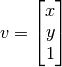
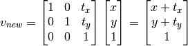
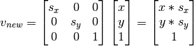
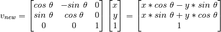
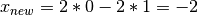
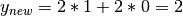
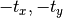
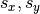
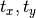
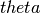

Welcome to Game Development with Python!¶
The goal of this site is to open new worlds and possibilities to you in the area of computer programming. In this week we’ll motivate learning to program by exploring gaming. Today’s video games are complex masterpieces and are programmed by teams of programmers, artists, and writers. Yet, video game programming remains a very elite area with a huge amount of competition. So, my goal is not to teach you to be a video game programmer, but to teach you to be a programmer by learning about video games and how they are constructed. More importantly, the skills and knowledge you learn by studying Computer Science will open the door to a profession full of creativity, opportunities for life-long learning, and the skills needed to help many people.
There are a few basic things you need to learn to become a computer programmer. In the early lessons this week we’ll study the Python programming language and learn some of the basics. Just as importantly there are also skills we need to learn to find problems in our code. We almost never write code correctly the first time. We have to debug our programs until they are correct. Don’t worry if your program doesn’t run the first time you run it. It probably won’t. Programs working the first time they are run is the exception, not the rule. Try the code you have written. When it doesn’t work, try to figure out why. If you have spent a few minutes with the code and you are not sure of the problem, then ask for help. There is no problem in asking questions.
In Computer Science, we never write anything ourselves from scratch. Instead, we build on the shoulders of the giants that have come before us. Writing programs is a creative process and the design and coding of new creations (our programs) can be very rewarding, both emotionally and monetarily. But we all must acknowledge as programmers we don’t write things from scratch. Instead, we build new things by using code that others have written before in new and creative ways. Much of what we do as programmers relies on libraries of code that others have already written to make our job easier. So, an important part of computer programming is reading, trying out libraries of code, and figuring out how to use it in building something new.
As programmers we use our creativity and ingenuity to take code from libraries and combine these libraries along with code we write, to solve problems that impact the lives of those around us in some manner, hopefully for the good of humanity. We’re very excited to have you begin this journey, so let’s get started!
Getting Started¶
We are going to learn to program using a very popular programming language called Python. The language is named Python after Monty Python. It was first created by Guido Van Rossum, a programmer who worked for Google for a while and now works for Dropbox. Python is a language that is used by many websites to access data on web servers. It is also a language that will let you quickly learn to program. You can write a one line program in Python.
Python is a high-level language, meaning that we can do a lot with very few statements and instructions to the computer. For instance, we can build a list of values from a file with one line of code. But, to accomplish these high-level tasks, we need a program to help us. Python is an interpreted language and that means that a special program, called the Python interpreter, translates the high-level statements that we write into the low-level commands understood by a computer.
The figure below has the interpreter represented in Pink/Red. The internals of the interpreter (i.e. the stuff inside the Pink box) is not important to us. What is important is the source program which is interpreted by the Python interpreter, which is a program that understands how to run your source program using the operating system and the computer hardware. So, to run a Python program we must run it with a Python interpreter.
Configuring Python¶
To run Python programs you must have a Python interpreter installed. There are two versions of Python, version 2 and version 3. We’ll be using Python version 3 for our programming.
We’ll download a version of Python that has lots of modules which provide code for us to use. Anaconda is a large distribution of Python with lots of great modules available to use. We first bring up a web browser and go to http://anaconda.com. Then download version 3 of the anaconda distribution. Install the anaconda distribution on the computer. Usually it is just installed in your home directory. Then we can add the anaconda bin directory to your path. How to do this depends on your operating system. If you are using Windows, you edit the PATH environment variable using the Windows method of modifying the path. If you are using Mac OS X then you must edit the PATH environment variable by editing the .bashrc file in your home directory.
After installing anaconda, several other packages must be installed. First install keras. To do this you execute this command from a command prompt on the system.
conda install keras==2.1.2
Then pydot and graphviz must be installed. For our purposes later it is probably best to have pydot version 1.2.4 installed and graphviz version 2.40.1. Both pydot and graphviz are available as add-ons to the anaconda distribution of Python.
conda install pydot
conda install graphviz
Finally, we need to install the pygame module so we can use it while building some games. Pygame is not available as an add-on to the anaconda distribution but is available as part of Python so we use the pip command instead which is the Python install program (i.e. pip).
pip install pygame
This concludes installing all the Python software we’ll need for working through the problems on this site. Next we’ll configure a tool for writing software to play games.
Configuring the IDE¶
To write our Python programs we’ll use an Integrated Development Environment, or IDE, that runs the interpreter by providing it with your source program. Wing IDE 101 is our development environment.
Start up the Wing IDE 101 program. The first time you run it you must accept the license (it is free to use) and then configure it to run our distribution of Python. To configure Wing IDE 101 choose Edit -> Configure Python… and then pick the right Python interpreter. In our case we’ll choose pythonw because this Python 3 interpreter will capture the keystrokes on the keyboard correctly to interact with games developed with pygame.
{kind=link}
Press OK to accept pythonw as the interpreter. Wing 101 will ask if you want to restart the shell which is just another name for the Python interpreter. You can respond by clicking the restart shell button.
This is a one-time only configuration. Now, let’s write our first program.
Lesson 1¶
From this lesson we learn how to create a program in Wing IDE 101, save it, run it, and interact with it.
The first program is almost always a hello world application. We’ll start that way to keep things very simple, but with just a little extra. First start Wing IDE 101 and click the new program button. Then type the code from the figure below into the “untitled” pane. Once you are done typing it you can run it by clicking the bug icon. This icon is used to run and debug your program.
{kind=link}
When you first run it you will be asked to save it. Save it to your Desktop folder and call it helloworld.py with no spaces and no capital letters.
The program will wait for input from you. You have to type your name in the Debug I/O pane. Then it will finish printing its output.
Next, let’s run it by stepping into it. Click the step into arrow on the right side. Then click the step over button to watch the Python interpreter execute each of the two statements.
By clicking in the gray strip just to the right of the line numbers you can also set breakpoints. A breakpoint looks like a stop light. When a breakpoint is encountered during execution of the program the program stops just before the statement is executed.
Try using step into, step over, and setting a breakpoint to make sure you know how they work.
Introduction to Types and Calling Functions¶
Python supports doing math involving two different types. There are integers and floats in Python. We’re familiar with integers. Floats are floating point numbers which are the computer’s version of Real numbers.
We can assign a variable a value. So for instance,
x = 6
This assigns the variable x the value 6. The 6 has a type which is an integer, or int in the Python language. The x is a variable which is a reference to the value. A reference is a pointer to a value. A value is also known as an object. So 6 is an integer object.
There are other types of values in Python. For instance, writing
y = 6.0
creates a variable reference y that points to a float object. Writing a decimal point in a number makes it a float instead of an int.
There are other types of values as well in Python. Strings are another example. In the first program above we have a string literal value show up when we wrote “Hello”. Strings are called the str type in Python. String literal values are written inside either double or single quotes.
The first program we wrote above calls two functions, the input function and the print function. A function is given a value or values and returns a value. The values given to the function are written inside the parens. If there is more than one, they are separated by commas. You call a function by writing its name. When a function is called you go to that function’s code (which you might not see) and execute its code. When the function is done executing it returns. A function always returns a value. Sometimes we care about the value the function returns. Other times we might not.
The input function gets input from the user and returns a str of that input. The input function is passed a prompt string to print when it is executed. The prompt is printed to the screen and then the program stops and waits for enter to be pressed. Any input typed before enter is pressed is returned from the input function as the value of the input. In the program above the input function is given the string literal value “What is your name? ” and it returns the input entered by the user.
The print function is given the two strings to print. The first string is the string literal “Hello”, the second string to print is the value entered by the user. The print function prints the values passed to it to the screen separated by spaces. Notice that more than one value can be passed to some functions, like print. When more than one value is passed to a function, we separate the values by commas. The print function returns a special value called None which we don’t care about so we don’t bother writing
val = print("Hello",name)
because val would just refer to the value None anyway and we don’t need that value in our program.
Converting Between Types¶
We can convert from one type to another by writing the name of the type like a function in Python and passing in the value we want to convert to a new type of value. For instance, consider getting the age of a person from the user.
name = input("What is your name? ")
myAgeStr = input("What is your age? ")
myAgeInt = int(myAgeStr)
print(name, "next year you will be ", myAgeInt+1)
Examine the code above closely. The myAgeStr is a string because that’s what input returns. The myAgeInt is an integer because we call the int type conversion function on the string.
Normally we might simplify the code above to look something like this.
name = input("What is your name? ")
myAge = int(input("What is your age? "))
nextYearsAge = myAge+1
print(name, "next year you will be ", nextYearsAge)
The code above has an assignment statement that assigns the value computed from myAge+1 to the variable nextYearsAge. Alternatively, you can increment the age. So you could write the code like this as well.
name = input("What is your name? ")
age = int(input("What is your age? "))
age = age+1
print(name, "next year you will be ", age)
This code demonstrates that you can re-use the same variable and increment it in the program. Re-using the same variable works well when you want to keep track of some accumulating value.
Arithmetic Operations¶
Notice that we added 1 to an integer in the code in the previous section. Integers and floats support all the common arithmetic operations include +, -, *, and /. Integers support // which represents integer division. So 6//4 would be 1. Integers also support the modulo (i.e. remainder) operator so 6%4 is 2. This is division like you learned in grade school. When you divide 6 by 4 you get 1 with a remainder of 2.
Strings support a few arithmetic operators as well like +, which is used for string concatenation. The * operator can be used with an integer to get string repetition. Here are some sample operations with strings.
Kent's Mac> python3
Python 3.6.5 |Anaconda, Inc.| (default, Apr 26 2018, 08:42:37)
[GCC 4.2.1 Compatible Clang 4.0.1 (tags/RELEASE_401/final)] on darwin
Type "help", "copyright", "credits" or "license" for more information.
>>> 6 + 5
11
>>> "hi"*6
'hihihihihihi'
>>> "hi " + "there"
'hi there'
>>>
In the code example above I wanted to try out something in Python. You can do this in two ways. You can open a terminal window and try it there. To do this go to the search icon at the top of the window, and type terminal. Then you can type python3 to start the interpreter. Once you have tried out what you see here you can type ctl-d to get out of the interpreter or just close the window.
The other way to try something out quickly is in Wing IDE 101. Click on the Python Shell pane and then you can try it right in that pane. You DON’T need to type ctl-d inside Wing IDE 101 to get out when you are done using the Python Shell in Wing.
You can get more help with arithmetic operators in Python by going to this page.
Lesson 2¶
Write a program that calculates the number of years since the Declaration of Independence was signed in 1776. Interacting with the program should look exactly like this.
What year is it? 2021
It has been 245 years since the Declaration of Independence was signed.
Once you have completed your solution, you can check it here.
String Operations¶
Strings are another built-in type in Python. String objects have a number of functions that we can call on them. When a function is associated with an object the function is called a method. To call the method we write the reference to the object first, followed by a dot, followed by the method name. For instance, there is a method called lower that returns a new string with all the characters of the object lower cased.
So if we execute this code…
s = "Hello WORLD!"
t = s.lower()
print(t)
it prints the string “hello world!” to the screen. There are many other methods that work on strings as well. They are listed in the String documentation.
Lesson 3¶
Write a program that asks the user to type a sentence and then prints all the lower case characters as upper case and all the upper case characters as lower case. So interacting with it should look like this…
Please type a sentence: Hello WORLD!
Here is the new sentence: hELLO world!
Once you have completed your solution, you can check it here.
If Statements¶
There is another type in Python for true or false. Boolean values, called the bool type in Python, are True and False. Using Python we can compare two values and get a boolean value as a result. Then we can execute one block of code or another based on that result. The then part is executed if the boolean value is True in an if statement, and the else part is executed if the value is False in an if statement.
For instance, consider this code.
dogName = input("What is your dog's name? ")
if dogName == "Fido":
print("That's not very original.")
else:
print(dogName, "is a cool name!")
We can also compare values for less than or greater than, less than or equal and greater than or equal.
age = int(input("Please enter your age: "))
if age < 1:
print("No your not!")
else:
print(age,"is a good age!")
if age < 1:
print("Younger than the first year, really?")
elif age < 13:
print("Those are great years!")
elif age <= 19:
print("You are a teenager! Oh boy!")
elif age < 26:
print("Your brain is still growing until you are 26. Did you know that?")
else:
print("Congratulations!")
if age >= 8:
print("You are ready to start learning to program!")
Lesson 4¶
Write a game that asks the user to think of a number between 1 and 100 (inclusive). Then check to see if the number is 50 or not and if it is, print that it guessed right. So running the program would look like this if the user thought of 50.
Pick a number between 1 and 100.
Is your number 50? Yes
I guessed correctly!
And, if the number was not 50 then it should run like this.
Pick a number between 1 and 100.
Is your number 50? No
I guessed incorrectly!
This seems like a silly exercise. But it will get you writing some code with an if statement. You can compare strings with == and != for equals and not equals. However, strings are either lower case or upper case. If you have a string named s and you want to lower case it you can write s.lower() to lowercase the string.
Once you have completed your solution, you can check it here.
Introduction to While Loops¶
We can make the guessing game in the last lesson more interesting if we allow the program to repeatedly guess numbers to find the correct answer. A while loop is just the trick. A while loop has a loop body which is a sequence of statements that will be executed as long as the condition of the while loop evaluates to True. Here is an example of a while loop.
count = 0
while count < 10:
print(count)
count = count + 1 # you can abbreviate this as count += 1
Run this code to see that it repeats the print and the assignment statement 10 times, printing 0 through 9 to the screen.
Lesson 5¶
We can improve the guessing game by keeping track of two values a low and a high integer. Then each time through the loop we’ll guess the integer average of the low and high value. If we are wrong we should ask if the number is lower or higher. If it is lower then we can adjust the high value. If it is higher than the average, then we can adjust the low value. In this way we keep repeating the body of the loop until the value is found.
We can start the program by setting up the loop as follows.
...
found = False
while not found:
# This is the body of the loop where we guess and then adjust low and high as
# appropriate.
You fill in the blanks in this code so interacting with the program works like this.
Pick a number between 1 and 100
Is your number 50? no
Is it higher or lower? higher
Is your number 75? no
Is it higher or lower? lower
Is your number 62? yes
I guessed correctly in 3 tries.
Once you have completed your solution, you can check it here.
Two Container Types¶
There are several types built into Python for containing other values. These types are called container types or container classes. Tuples, lists, sets, and dictionaries are four of the common container types available in Python.
We want to learn about these container types because we are going to write programs that often have more than one value that we must keep track of. When we do, we want to use one of these containers if possible. For each of the containers we need to know how to create a container object, how to put things in it, and how to get things back out of it. The things we put in containers are called elements because containers are written so that practically any kind of element may be added to a container.
Tuples¶
There are four different kinds of collections that are important for us as computer programmers. We will first look at tuples. A tuple is a sequence of values that cannot be changed once the tuple is created. For instance (4,3) is a tuple of two integers. Here is some code that works with tuples.
1 2 3 4 5 6 7 8 9 10 11 | x = (4,3.0)
y = x[0]
z = x[1]
print("x =",x)
print("y =",y)
print("z =",z)
a,b = x
print("a =",a)
print("b =",b)
c = (a,b,x)
print("c =",c)
|
Running this code produces the following output.
x = (4, 3.0)
y = 4
z = 3.0
a = 4
b = 3.0
c = (4, 3.0, (4, 3.0))
The tuple (4,3) is assigned to x on the first line. The second line takes the zeroth element of the tuple and assigns it to y. Tuples are immutable sequences. Tuples being immutable means we can’t change the elements of the sequence once the tuple has been created. Elements of sequences, like tuples, are given index positions starting at 0. So x[0] is the first element of the tuple. Then x[1] is the second element of the tuple.
Using Python you can assign variables to each element of a tuple by separating by commas. Line 7 of the code above assigns a and b to the individual elements of x. Finally, line 10 shows that a tuple may contain other tuples.
You can read more about tuples by clicking here.
Lists¶
Lists are similar to tuples, except that we use a slightly different syntax for creating a list and lists are mutable while tuples are immutable. This means that lists can be modified once they are created. Consider this code.
1 2 3 4 5 6 7 8 9 10 11 12 13 14 | lst = []
lst.append("hi")
lst.append("there")
print(lst)
y = lst[0]
x = lst[1]
print(x)
print(y)
lst[1] = "Bob"
print(lst)
s = "Hello World\tHow,\tare\nyou?"
print(s)
sList = s.split()
print(sList)
|
Line 1 of the code above creates an empty list. Lines 2 and 3 add to elements to the list, mutating it so it is no longer empty. Line 4 prints the list. Take a look at the first line of output below to see what a list looks like when printed. Like tuples you can access individual elements of a list as shown on lines 5 and 6. Take note of the fact that the indices into a list start at 0 and go to 1 less than the length of the list. Line 9 shows how an element of a list may be mutated to hold a new value.
Line 13 shows how a string can be split by calling the split method which returns a list of the white space separated values in the string. White space are any blanks, tabs, or newline characters found in the string. Take note of how the tab character (i.e. \t) and the newline character (i.e. \n) are encoded in the string and how they affect the output coming from the program.
['hi', 'there']
there
hi
['hi', 'Bob']
Hello World How, are
you?
['Hello', 'World', 'How,', 'are', 'you?']
More information on using lists can be found here.
Patterns of Computation¶
In the following sections we’ll learn about several patterns for computing things involving lists of elements. These patterns are used over and over again in writing code. Each section will introduce one of these patterns through an example. You should take a moment in each section to understand how these patterns can be applied to lots of different situations.
For Loops for Lists¶
Lists are collections of elements. We keep elements in a list when the elements are all alike in some way. We might have a list of integers, or a list of strings. We can even have lists of more complicated values like employees or students. For now, we’ll limit our discussion to lists of strings and integers.
When we have a list of elements we may want to do something with each element of the list. This is where a for loop comes in handy. A for loop iterates (i.e. repeats) once for each element of a list. Here is a loop that prints the elements of a list.
1 2 3 4 5 6 | s = "Hello World\tHow,\tare\nyou?"
print(s)
sList = s.split()
print(sList)
for element in sList:
print(element)
|
This for loop prints each of the elements of the list.
Each list, like tuples, has index values that can be used to get individual elements of the list. Consider this code.
1 2 3 4 5 | s = "Hello World\tHow,\tare\nyou?"
print(s)
sList = s.split()
print(sList[0])
print(sList[1])
|
So sList[0] is the first element of the list. There is a len function that can be used to get the length of a list. There is also a range function that will generate a list of integers, which can be used as the indices into a list. So this code will work to print the elements of a list as well.
1 2 3 4 5 6 | s = "Hello World\tHow,\tare\nyou?"
print(s)
sList = s.split()
print(sList)
for i in range(len(sList)):
print(sList[i])
|
The range function can be given three arguments. It can be called as range(start,stop,increment) and it generates a list of integers from start to stop-1 that goes up by increment each time. So range(0,10,2) would generate the list of integers [0,2,4,6,8] but not 10 because range only goes to stop-1 which would be 9 in this case.
We can also generate ranges that go backwards. So, range(9,-1,-1) would generate the list [9,8,7,6,5,4,3,2,1,0]. This can be used to build a more flexible for loop for going through elements of a list. For instance, if we want to use a for loop to go backwards through a list we can write the following.
1 2 3 4 5 6 | s = "Hello World\tHow,\tare\nyou?"
print(s)
sList = s.split()
print(sList)
for i in range(len(sList)-1,-1,-1):
print(sList[i])
|
The code above will print you? first and Hello last.
Importing Modules¶
A module is code that someone else wrote and that we can use. It is frequently useful to use code that others have already written so we don’t have to start from scratch for each program we write. We also know when we import a module that the module has been debugged and should work as described. We import a module by writing
import module_name
where module_name is the module to be imported. Many, many modules are already written for Python. Included among them is the random module.
If we import the random module we can use code in it to build a random permutation of a list of integers. Here is some code that can be used to build a random permutation of a list of integers.
1 2 3 | import random
rng = range(10)
print(random.sample(rng,len(rng)))
|
To call the sample function from the range module, we write random.sample(arguments) to call it. To know what is in the random module, you have to read the random module documentation. Go there now to read about the sample function and what it does.
The Accumulator Pattern¶
The accumulator pattern is a pattern of statements that is frequently used for accumulating a value calculated from the values in a list. The general format of the pattern looks like this.
1 2 3 4 5 6 | accumulator = identity_value
for element in list:
accumulator = accumulator op element
# use the accumulated value in the accumulator.
|
For instance, if we want to add all the values in a list together we might write something like this.
1 2 3 4 5 6 | total = 0
for x in lst:
total = total + x
print("The total of the values in the list is", total)
|
This gives us the total numeric value. But, the same pattern might apply to concatenating all the strings in a list by writing this.
1 2 3 4 5 6 | sentence = ""
for s in sList:
sentence = sentence + s + " "
print("The sentence is", sentence)
|
The blank is added to put spaces between the words that are concatenated to the string.
There are many uses of this pattern. It can be used to find the product of a bunch of numbers. Sums and concatenations are the example given here. We can also use it in computing averages where we need the sum of the items and the number of items being averaged.
Lesson 6¶
Let’s use what we have learned to create a jumble of a word. For instance, if we have a word like “truck” then a jumble of it is “curtk”. Write a program that asks the user to enter a word and then prints a jumble of that word. Your program interaction should look like this.
Please enter a word: truck
A jumble is curtk.
You should make sure that your output is identical to this, except that you might have a different jumble.
The solution to this involves using a for loop and the accumulator pattern so this exercise brings a lot of things together that you just learned. To begin, write a program that prints out the same word that you type in. Then start expanding on it. Write a little bit, try it, then write a little bit more. This is called incremental programming.
Once you have completed your solution, you can check it here.
The Guess and Check Pattern¶
There is another useful pattern that shows up in many computer programs. The guess and check pattern is often used when dealing with a list of elements. If you need to know if a certain condition holds for some element of a list, then you want to use the guess and check pattern. The general pattern look like this.
guess = False
for element in lst:
if p(element):
guess = True
# after the for loop we know of p(element) was true for some element of lst
There are many variations of this pattern. For instance, if we want to know if an even number appears in a list we might write something like this.
lst = [7,5,4,3,1]
evenNumberExists = False
for element in lst:
if element % 2 == 0:
evenNumberExists = True
if evenNumberExists:
print("There was an even number in the list.")
else:
print("There were no even numbers in the list.")
Again, there are many different versions of this guess and check pattern. For instance, if we want to find the maximum value of a list of values we might do it like this. Assume that we know that all values are non-negative in a list that we are given. Consider this code.
lst = [3,1,5,4,7] # This is some collection of values given to us.
# -1 works as an initial value because it is less than any maximum value.
maxVal = -1
for x in lst:
if x > maxVal:
maxVal = x
print("The maximum value is", maxVal)
Reading a File¶
It is sometimes useful to read from a file using Python. There are several ways to do this. Since a file consists of many lines of text, you can use a while loop to read from a file. You may also use a for loop to read from a file. Consider reading from a file like the wordsEn.txt file. You can save this file by right-clicking on it and selecting Save Link As…. Save it to a file called wordsEn.txt. Then you can read this file by writing this. The file and the program must be saved in the same directory for this code to work.
file = open("wordsEn.txt", "r")
words = []
for line in file:
words.append(line.strip())
The code above builds a list called words that contains all the words found in the file. The call to strip removes any white space appearing before or after the word. You can achieve the same result by using this alternative code.
file = open("wordsEn.txt","r")
words = [x.strip() for x in file.readlines()]
This code relies on what is called a list comprehension to loop over the lines in the file and strip each line. The file.readlines() reads all the lines of a file and places them into a list of strings. The x.strip() for x in file.readlines() takes each element of the list and strips the whitespace which includes a newline character for each line of the file before it is stripped and removes those newlines. We end up with just a list of all the words in the file.
Word Permutations¶
Jumbles are permutations of words. A permutation is simply a rearranging of the elements of a list. In the case of jumbles, it is a rearranging of the letters of the string. Permutations are something that can be useful and someone has written a module for doing this. The itertools module helps in building permutations. For instance, to get all the permutations of the string “hello” we can use the following code.
import itertools
s = "hello"
lst = ["".join(x) for x in itertools.permutations(s)]
print(lst)
This code uses the itertools permutations function to get all the permutations of a string. However, calling the permutations function returns an object that when iterated over returns the permutations as tuples of characters like (‘h’,’e’,’l’,’l’,’o’) instead of as strings. So, the expression “”.join(x) takes a tuple of characters and joins them all together into a string. So, the list comprehension above returns the following list of values, which is the output from this code.
['hello', 'helol', 'hello', 'helol', 'heoll', ...]
Many of the permutations are omitted here since there are 5x4x3x2x1=120 permutations.
Lesson 7¶
Jumbles often appear in newspapers and on websites. In this lesson you’ll write a program that helps you solve jumbles. Ask the user to enter a jumbled word. Then print possible solutions to each jumbled word that is entered. For instance, interacting with the program should work like this.
What is the jumbled word? ipnut
Possible solutions are:
input
You can write this code by using the wordsEn.txt file, reading it into a list, and then checking each of the permutations of the jumbled word to see if they are in the list.
You can try these jumbles as well with your program: yamof, warely, and deonlo. One of them doesn’t behave quite right. Why is that? Form a theory and then check it out to see if you were right.
Once you have completed your solution, you can check it here.
Two More Container Types¶
Because of their importance to efficiency there are two more built-in types that we’ll cover, sets and dictionaries. These two collections are important because membership within them can be determined in constant time. That means that no matter how big the set or dictionary is, the amount of time needed to determine if an element is in a set or dictionary does not increase. You may have noticed in lesson seven that it took a considerable amount of time to determine what the jumbled word should be in some cases. This is because of the number of words in wordsEn.txt. As the size of the list of words grows, so does the time it takes to look up a word. One solution to this is to use a set.
Sets¶
A set is a collection of elements where there are no duplicates and where there is no ordering of them. Sets are simply collections of unique elements. Python has two different set types. The frozenset type is a set that cannot be altered after it is created. A set is a mutable (i.e. alterable) set of elements. Documentation on how to use both types of sets can be found here.
If we wanted to build a frozenset of all the words in the wordsEn.txt file all we have to do is add a frozenset type conversion to our list comprehension that builds the list of words.
file = open("wordsEn.txt","r")
words = frozenset([x.strip() for x in file.readlines()])
This gives us a frozen set. If we replaced the frozenset with set then we would have a set type of value. The need for the distinction between sets and frozensets will be clearer after reading about dictionaries.
Both set types support set operations like intersection, and union, and difference. There are mutating methods for the set type that also support mutating set operations like intersection_update, update, and difference_update. To learn more about these operations you can read the set documentation.
You can test for set membership using the in operator. So, the following code can be executed for a set of integers.
mySet = frozenset(range(10))
x = 6
if x in mySet:
print("Yes")
else:
print("No")
This code will print Yes when executed. If x=10 it would print No. As an example of computing the intersection of two sets consider this code.
firstSet = frozenset(range(10))
secondSet = frozenset(range(5,20))
thirdSet = firstSet.intersection(secondSet)
print(thirdSet)
When executed, this code prints frozenset({5, 6, 7, 8, 9}) as the result.
Lesson 8¶
Redo the jumble code from lesson seven to use frozensets instead of lists whenever possible. Make sure you have the same output as before. You should notice a significant speed up in finding the correct answers. Again, you can try out ipnut, yamof, warely, and deonlo. The interaction with the program should look like this.
What is the jumbled word? ipnut
Possible solutions are:
input
Once you have completed your solution, you can check it here.
Dictionaries¶
A dictionary, sometimes called a map or a hashtable, is a mapping of keys to values. A set is like a dictionary with only the keys being in a set. The dictionary, or dict type in Python, is used to map a key to a value for some set of keys. Here is an example of creating and using a dictionary in Python.
stateCapitals = {}
stateCapitals["MN"] = "St. Paul"
stateCapitals["IA"] = "Des Moines"
stateCapitals["WI"] = "Madison"
for state in stateCapitals:
print(state,stateCapitals[state])
if "ND" in stateCapitals:
print(stateCapitals["ND"])
else:
print("ND is not in the stateCapitals map")
The code above shows us that we can iterate over the keys in the dictionary by using a for loop. We can also use the subscript operator to get the value that goes with the key by writing stateCapitals[state] where state is that key.
The cool thing about a dictionary is that the keys can be virtually any value that is not mutable and can be compared for equality. So the key can be a tuple, a string, a frozenset, or an integer, or other immutable values. A key to a dictionary cannot be a set, or a list, or another dictioinary because these are mutable values.
Lesson 9¶
Create a dictionary that maps tuples of (row,col) to values of “X” or “O”. Then write two nested for loops that print a tic tac toe board. You should get the contents of the board from the user. So, interacting with the program should look like this.
Please enter the first row of the board : X O X
Please enter the second row of the board: X _ X
Please enter the third row of the board : _ O _
The board is currently this:
| X | O | X |
-------------
| X | | X |
-------------
| | O | |
When printing, if you don’t want to print a newline character at the end of a print, you can call print like this:
print("Hello World", end="")
and it will not print a newline at the end. In addition, if you want to print a newline someplace other than the end of a print, you can include the newline in the string like this.
print("Hello\nWorld")
These two hints may help in solving this problem.
Make sure you use two nested for loops to print the board back out once you have created the board dictionary. It will be helpful if you treat the first row as row 0 and the first column as column 0 so that board[(0,0)] is the upper left corner of the tic tac toe board.
Once you have completed your solution, you can check it here.
Writing and Calling Functions¶
As our programs get bigger we want to organize them and one of the major organizational tools in Python is the ability to define functions. A function has a name and is given arguments. The function returns a value. We call a function, which is a sequence of statements that are executed using the arguments provided to it. When the sequence of statements finishes, we return to where we called the function. Consider this code.
# This is a predicate function that takes an integer as an argument and
# returns true if the integer is even and false otherwise.
def isEven(x):
if x % 2 == 0:
return True
return False
# This function takes a list of numbers and multiplies all of them together
# and returns the product of those numbers.
def product(lst):
product = 1
for x in lst:
product = product * x
return product
# This is the start of code that is not in either function. This is the module level code.
evens = []
for x in range(1, 100):
if isEven(x):
evens.append(x)
evensProduct = product(evens)
print("The product of the even numbers between 1 and 99 is", evensProduct)
This code above is used to find the product of all the even numbers between 1 and 99.
Typically Python programs have a main function that is defined. The main function is defined to contain the top-level code of our program. It typically is not very complicated. If it gets too complicated we will usually figure out how to organize the program better to keep the main function simpler. Here is the general format for writing a main function and calling it using the above example again.
1 2 3 4 5 6 7 8 9 10 11 12 13 14 15 16 17 18 19 20 21 22 23 24 25 26 27 28 29 30 31 32 33 34 35 36 37 38 39 40 | # import any modules at the beginning
def isEven(anInt):
x = anInt % 2
if x == 0:
return True
return False
def product(lst):
product = 1
for x in lst:
product = product * x
return product
# Typically Python programs have a main function someplace which is where
# the program begins execution (because of the call to it shown below.)
def main():
# This is the code in the main function of this program.
evens = []
for x in range(1, 100):
if isEven(x):
evens.append(x)
evensProduct = product(evens)
print("The product of the even numbers between 1 and 99 is", evensProduct)
# This if statement is at the module level. It is the only
# code that is at the module level in this program.
# By writing this if statement, if the program is run
# by itself then main() is called to run the program.
# If this module were imported into another program
# the following condition would be false and so
# the main function defined above would not be called.
if __name__ == "__main__":
main()
|
There is another important concept to understand in regard to functions. A variable defined inside a function is only available in that function and not outside it. So for instance, the variable x, defined on line 4 in the isEven function, is not available outside of that function. The variable x that appears on line 24 in the main function is a different x. So when isEven is called on line 24 and then assigns a value to x on line 4, this is a different x than is being assigned a value on line 24 in the program. In this way, we don’t have to worry about what the names of variables are outside the function that we are writing. We know that anything we define inside a function is only defined inside the function and not elsewhere.
Lesson 10¶
Let’s take the code from the last lesson and modify it so that X’s are represented with 1’s and O’s are represented with -1’s. Zero can represent a blank spot. So, we can write code at the module level to be used as constants in our code. Take a look at this code below.
1 2 3 4 5 6 7 8 9 10 11 12 13 14 15 16 17 18 19 20 21 22 23 24 25 26 27 28 29 30 31 32 33 34 35 36 37 38 39 40 41 42 43 44 45 46 47 48 49 50 51 | X = 1
O = -1
tokenToChar = {}
tokenToChar[X] = "X"
tokenToChar[O] = "O"
tokenToChar[0] = " "
def printBoard(board):
for i in range(3):
print("|",end="")
for j in range(3):
print(tokenToChar[board[(i,j)]]+"|",end="")
print('\n-------')
def main():
row1 = "X _ O".split() #input("Please enter the first row of the board : ").split()
row2 = "X X O".split() #input("Please enter the second row of the board: ").split()
row3 = "O O X".split() #input("Please enter the third row of the board : ").split()
board = {}
for i in range(len(row1)):
if row1[i] == "X":
board[(0,i)] = X
elif row1[i] == "O":
board[(0,i)] = O
else:
board[(0,i)] = 0
for i in range(len(row2)):
if row2[i] == "X":
board[(1,i)] = X
elif row2[i] == "O":
board[(1,i)] = O
else:
board[(1,i)] = 0
for i in range(len(row3)):
if row3[i] == "X":
board[(2,i)] = X
elif row3[i] == "O":
board[(2,i)] = O
else:
board[(2,i)] = 0
printBoard(board)
#print(evalBoard(board))
if __name__ == "__main__":
main()
|
Take a look at the printBoard code and see how it works. Now, define another function called evalBoard which when it is called will return 1 if X wins, -1 if Y wins, and 0 if nobody wins or if there is no winner yet. Be sure to call your evalBoard function to try it out.
Once you have completed your solution, you can check it here.
Writing Classes, Making Objects, Calling Methods¶
As programs get even bigger, there needs to be even more organization to them. For instance, in the previous lesson we have developed two functions that both operate on a Tic Tac Toe board. It would be nice to group these functions together by tying them to a class of data. Classes are the means a programmer can describe a new type to Python and the operations that are allowed on that new type. Consider this code.
1 2 3 4 5 6 7 8 9 10 11 12 13 14 15 16 17 18 19 20 21 22 23 24 25 26 27 28 29 30 31 32 33 34 35 36 37 38 39 40 41 42 43 44 45 46 47 48 49 50 51 52 53 54 55 56 57 58 59 | # This is the name of the new type (i.e. class).
class Kitty:
# Inside the class is anything indented inside it. This class
# extends to the "def main" below.
# This method name is the one given to the constructor. It exists
# so objects can be created as shown on lines 31 and 48 below.
# The constructor stores values in the object which is referred to
# by self.
def __init__(self, name):
self.name = name
# This is a method that has a side-effect. It returns None.
def speak(self):
print(self.name,'says meow')
# This is an accessor method since it access the name
# field of the object referred to by self.
def getName(self):
return self.name
# This is a mutator method since it changes the name
# field of the object referred to by self.
def setName(self,newName):
self.name = newName
def main():
# Here we create an object by writing the type's class
# name in this expression.
helloKitty = Kitty("Tigger")
# Here is how a method is called. We write the
# object . method ( arguments )
# to call a method. In this case there are no
# arguments because self is supplied by writing
# helloKitty on the left side of the dot.
helloKitty.speak()
# Here is a call to an accessor method. Notice we
# write helloKitty.getName() to call getName on
# the helloKitty object.
catName = helloKitty.getName()
print(catName)
helloKitty.setName("Curious")
# This creates a second Kitty object.
secondKitty = Kitty("Mother")
# Notice the two calls to speak. One
# on helloKitty's object and one on
# secondKitty's object.
helloKitty.speak()
secondKitty.speak()
if __name__ == "__main__":
main()
|
The comments in the code above are important to review here. Take the time to review each line to see what it does and to familiarize yourself with the syntax. Then use the debugger to step into and over the entire program to watch how it executes. Check out the Stack Data pane in Wing IDE 101 so you can watch the objects as they are created and manipulated.
Operator Overloading¶
Because of its importance to understanding how some code works in Python, we’ll briefly go over operator overloading. Python allows certain operators to be overloaded like +, -, *, /, //, %, in, and many other operators that are covered here.
These operators are actually implemented as methods with special names in Python. For instance the __setitem__ and __getitem__ methods can be implemented to allow the subscript operator to be used on an object.
x = [1,2,3]
# Here is an example of __setitem__ being called on a list.
x[0] = 4
# Here is an example of __getitem__ being called on a list.
print(x[2])
The overloaded method is called when the operator is used in an expression.
The Tic Tac Toe board dictionary that we used in previous code could be implemented by writing a new class called TicTacToeBoard. But, we might still want to be able to set and get items from the dictionary as we did in the past. To do this we could write code like this.
1 2 3 4 5 6 7 8 9 10 11 12 13 14 15 16 17 18 19 20 21 22 23 24 25 26 27 28 29 30 31 32 33 34 35 36 37 38 39 40 41 42 43 44 45 46 47 48 49 50 51 52 53 54 55 56 57 58 59 60 61 62 63 64 65 66 | X = 1
O = -1
tokenToChar = {}
tokenToChar[X] = "X"
tokenToChar[O] = "O"
tokenToChar[0] = " "
class TicTacToeBoard:
# The TicTacToeBoard contains a dictionary which is called data. This encapsulates
# the board into the TicTacToeBoard object and hides the details from those using
# the object.
def __init__(self):
self.data = {}
# Here is the set item magic method for the set item operator
def __setitem__(self,key,val):
self.data[key] = val
# And here is the get item method.
def __getitem__(self,key):
return self.data[key]
def main():
row1 = "X _ O".split() #input("Please enter the first row of the board : ").split()
row2 = "X X O".split() #input("Please enter the second row of the board: ").split()
row3 = "O O X".split() #input("Please enter the third row of the board : ").split()
# Notice that the board is created differently now.
board = TicTacToeBoard()
# __setitem__ is used in the code below.
for i in range(len(row1)):
if row1[i] == "X":
board[(0,i)] = X
elif row1[i] == "O":
board[(0,i)] = O
else:
board[(0,i)] = 0
for i in range(len(row2)):
if row2[i] == "X":
board[(1,i)] = X
elif row2[i] == "O":
board[(1,i)] = O
else:
board[(1,i)] = 0
for i in range(len(row3)):
if row3[i] == "X":
board[(2,i)] = X
elif row3[i] == "O":
board[(2,i)] = O
else:
board[(2,i)] = 0
# check out how the two methods below are now called. They
# are no longer functions. They are methods which are a part
# of the TicTacToeBoard class.
board.print()
print(board.eval())
if __name__ == "__main__":
main()
|
Lesson 11¶
The code above shows us how we might define and use a new TicTacToeBoard class. It won’t work as it stands. To get the code above to work you must write the print and the eval methods of the TicTacToeBoard class. Complete this lesson by implementing these methods.
Once you have completed your solution, you can check it here.
Code Re-use with Inheritance¶
Inheritance is something we can use when writing classes so that we can re-use code that was written before. In some languages inheritance plays another role as well, but with Python the only reason for inheritance is code reuse.
Using our previous exercise as an example, the code below now inherits from dict instead of encapsulating a dict called data as in the last example. So, TicTacToeBoard is a dictionary and therefore does not need to have __getitem__ and __setitem__ written for it. This is the code re-use in this case. We automatically get these two methods because we are using inheritance. But, we still have to write the print and eval methods.
1 2 3 4 5 6 7 8 9 10 11 12 13 14 15 16 17 18 19 20 21 22 23 24 25 26 27 28 29 30 31 32 33 34 35 36 37 38 39 40 41 42 43 44 45 46 47 48 49 50 51 52 53 54 55 56 57 58 59 60 61 | X = 1
O = -1
tokenToChar = {}
tokenToChar[X] = "X"
tokenToChar[O] = "O"
tokenToChar[0] = " "
class TicTacToeBoard(dict):
# In this version, the TicTacToeBoard inherits from dict which means that
# TicTacToeBoard is a dictionary and does not need the __getitem__ and __setitem__
# methods because they are already defined. In addtion, the constructor below
# doesn't do anything except call the super constructor which should always be
# the first thing you do in an inherited constructor so you call the original
# super class constructor to do whatever it needs to do. Sometimes you might write
# additional code after the call to super().__init__()
def __init__(self):
super().__init__()
def main():
row1 = "X _ O".split() #input("Please enter the first row of the board : ").split()
row2 = "X X O".split() #input("Please enter the second row of the board: ").split()
row3 = "O O X".split() #input("Please enter the third row of the board : ").split()
# Notice that the board is created differently now.
board = TicTacToeBoard()
# __setitem__ is used in the code below.
for i in range(len(row1)):
if row1[i] == "X":
board[(0,i)] = X
elif row1[i] == "O":
board[(0,i)] = O
else:
board[(0,i)] = 0
for i in range(len(row2)):
if row2[i] == "X":
board[(1,i)] = X
elif row2[i] == "O":
board[(1,i)] = O
else:
board[(1,i)] = 0
for i in range(len(row3)):
if row3[i] == "X":
board[(2,i)] = X
elif row3[i] == "O":
board[(2,i)] = O
else:
board[(2,i)] = 0
# check out how the two methods below are now called. They
# are no longer functions. They are methods which are a part
# of the TicTacToeBoard class.
board.print()
print(board.eval())
if __name__ == "__main__":
main()
|
Lesson 12¶
The code above shows us how we might define and use a TicTacToeBoard class that inherits from dict. It won’t work as it stands. To get the code above to work you must write the print and the eval methods of the TicTacToeBoard class. Complete this lesson by implementing these methods.
Once you have completed your solution, you can check it here.
Turtle Graphics¶
{kind=link}
We are going to write a minesweeper event-driven application. To write the minesweeper application you’ll need to learn some things about Turtle Graphics. To use turtle graphics we create a turtle. The idea is a turtle runs around on the sand leaving a trail with its tail. In reality, sea turtles leave two tracks in the sand from their flippers. In the turtle graphics world the single trail can paint a picture. Actually, a turtle can do a lot more than leave a trail.
To create a turtle you start a new Python program and then write the following.
import turtle
myTurtle = turtle.Turtle()
Then, the identifier myTurtle represents or refers to a turtle. As we learned when calling methods, you can send commands to this turtle by writing the name of it followed by a dot (i.e. a period) followed by the command. For instance, to tell the turtle to go forward 50 steps you would write:
myTurtle.forward(50)
There are other commands that you might want to send to a turtle. Try these commands out to see what they do.
myTurtle.left(90)
myTurtle.right(45)
myTurtle.goto(100,300)
myTurtle.ht()
myTurtle.penup()
myTurtle.pendown()
myTurtle.shape("turtle")
myTurtle.color("green")
myTurtle.write("Hello World")
The complete Turtle Graphics documentation can be found here. T
Lesson 13¶
Draw a square with Turtle graphics. Use a for loop to do this. Then write a function called drawSquare that when called uses the turtle to draw a square at a particular location and with a particular size on the screen.
Have More Time?¶
Write a function called isPalindrome that returns true if a string is a palindrome. A palindrome is a string that spelled backwards is the same as forwards. For instance, “radar” is a palindrome. So is “madam i’m adam” and “a man, a plan, a canal: Panama” but you don’t have to handle these as they have spaces and puncutation to deal with. You only have to return true if it is a true palindrome with all punctuation and spelling included.
Write a main program that asks the user for input and then print “This is a palindrome.” or “This is not a palindrome.”
Write a function called intersection that returns the elements of two lists that are common to each other. Then write a test program that asks the user to enter two lists of strings and then prints the items that were common to each other. You can get input from the user with the input function and you can split a string into a list of strings with the split method on a string. So if s is the string ‘Hello World’ then s.split() returns the list [‘Hello’, ‘World’].
Event-Driven Programming and Minesweeper¶
In this part of the class we will create a Minesweeper application. Along the way you’ll learn some things about event-driven and GUI programming. The word GUI stands for Graphical User Interface and refers to programs that run in a window. Minesweeper is one of those applications since it responds to mouse clicks.
A GUI program responds to events that occur while the program is running. The main program for a GUI application is usually not written by the programmer. Instead the main program is provided and is called an event-dispatch loop. Here is some pseudo-code for an event-driven main program.
def main():
while True:
event = mainQueue.getEvent()
dispatch(event)
if __name__ == "__main__":
main()
In this code the mainQueue.getEvent() blocks if no event is available. A blocking method is a method that waits, without using any CPU time, for an event to become available. When an event is available then the getEvent method returns and the dispatch function looks for a handler to handle the event.
So, as programmers of event-driven programs, we register event handlers with the dispatch function so our event handler gets called when the event occurs that we want to handle. We’ll see this in the next section when we learn a bit about turtle graphics.
To start the Minesweeper application you can copy this code and these pictures to a folder on you computer. The code and the pictures must all be in the same folder on your computer.
You might take a couple of minutes to look over the Python code. The Tile class inherits from the Turtle class. This means a Tile is a Turtle with some extra things attached.
The MineSweepApplication inherits from the Frame class. A MineSweepApplication is a Frame with some extra things attached. A Frame is a widget that is a container. It holds other widgets like Turtles or Tiles for instance.
Lesson 14¶
If you run the starter code you might notice a very small window appear on the screen. Our goal is to fill in that window with a canvas area where we can create turtles (i.e. Tiles), create a menu and get ready to write the code for starting a game.
The code we write in this lesson goes in the buildWindow method of the MineSweepApplication. This is where we are going to write our event handlers and register them so we can process events in our program.
Our goal in these lessons is going to be to understand what the code we are working through does. To begin, let’s give our application a name and create an area where we can draw with turtles. To do this we add this code to the buildWindow method of the MineSweepApplication class.
1 2 3 4 5 6 7 | self.canvas = tkinter.Canvas(self,width=600,height=600)
self.canvas.pack(side=tkinter.LEFT)
self.master.title("Minesweeper")
theTurtle = turtle.RawTurtle(self.canvas)
theTurtle.ht()
|
This code tells the master window (i.e. the root window) to change its title to Minesweeper and creates a canvas where turtles can draw. The tkinter module is a framework for writing our own GUI programs and is cross-platform. You can read all about the tkinter framework here.
To create a menu for our application we create a Menu widget called bar, add a File menu widget to the menu bar and then add a couple of menu commands to the file menu as follows. If you look at your existing code before pasting this in, you will see the tickTock and the newGame functions. Put your code in around this existing code.
1 2 3 4 5 6 7 8 9 10 11 12 13 14 15 16 17 18 19 20 21 | bar = tkinter.Menu(self.master)
fileMenu = tkinter.Menu(bar,tearoff=0)
def tickTock():
currentTime = datetime.datetime.now()
elapsed = currentTime - self.startTime
elapsedSeconds = elapsed.seconds
self.elapsedTime.set(str(elapsedSeconds))
if self.running:
self.master.after(1000,tickTock)
def newGame():
print("New Game Selected")
fileMenu.add_command(label="New Game",command=newGame)
fileMenu.add_command(label="Exit",command=self.master.quit)
bar.add_cascade(label="File",menu=fileMenu)
self.master.config(menu=bar)
|
Now you can tell the turtle called theTurtle to do some of the commands that you learned above to see that it will draw on the canvas that you have created.
Finally, we create sidebar area to keep track of the number of bombs that are left. Our game will have 40 bombs in a 16x16 grid of tiles. We’ll also keep track of elapsed time.
1 2 3 4 5 6 7 8 9 10 11 12 13 14 15 16 17 18 19 20 21 22 23 | sideBar = tkinter.Frame(self,padx=5,pady=5)
sideBar.pack(side=tkinter.RIGHT, fill=tkinter.BOTH)
timeLabel = tkinter.Label(sideBar,text="Elapsed Seconds")
timeLabel.pack()
self.elapsedTime = tkinter.StringVar()
self.elapsedTime.set("0")
self.timeElapsed = tkinter.Label(sideBar,textvariable=self.elapsedTime)
self.timeElapsed.pack()
bombCountLabel = tkinter.Label(sideBar,text="Bomb Count")
bombCountLabel.pack()
bombEntry = tkinter.Entry(sideBar,textvariable=self.bombVar)
bombEntry.pack()
bombLabel = tkinter.Label(sideBar,text="Bombs Remaining = " + self.bombVar.get())
bombLabel.pack()
self.tileLabel = tkinter.Label(sideBar,text="Tiles Remaining = 256")
self.tileLabel.pack()
|
To keep track of a 16x16 grid in the program we construct a list of lists. Each list is a row of tiles in the minesweeper program. There are 16 of these rows. All 16 rows are put in another list called the matrix. The matrix is a variable in the MineSweepApplication.
The screen is an object that we can use to change the coordinates of the canvas. We can also register shapes with it. When we register a shape we say that we want a turtle to take that shape somewhere in our program.
We get the screen from the initial turtle we created. Then we can set the coordinates to be a 600x600 pixel canvas with (0,0) in the upper left corner. We can then clear the screen and set tracer to 0. The tracer command on the screen tells the screen not to update unless we tell it to update. This speeds up the program so that turtles appear to move very fast when we give them commands. Here is the code that does this. You can add this to the newGame function.
1 2 3 4 5 | screen = theTurtle.getscreen()
screen.setworldcoordinates(0,600,600,0)
screen.clear()
screen.tracer(0)
self.screen = screen
|
We now want to register some shapes. This is necessary because we will have turtles use these shapes later in our program. Some turtles will look like bombs, others flags, and still others will look like tiles. Turtle graphics requires you to register these shapes before a turtle can change its shape.
1 2 3 4 5 | screen.register_shape("bomb36.gif")
screen.register_shape("tile36.gif")
screen.register_shape("flag36.gif")
newGame()
|
Finally, when the program starts the newGame function is called. This function starts the game by creating the mines and tiles and then displaying them in a 16x16 grid.
We still need to complete the newGame function. You write the following code in the newGame function definition. When new game is called there may be an old game that needs to be cleaned up. Since each tile is a Turtle, we can clean up the old game by moving the turtles off the screen. To do this we write a couple of for loops to go through all the rows of the matrix and for each row all the columns of the row. Here is what the code looks like:
1 2 3 | for row in self.matrix:
for tile in row:
tile.goto(-1000,-1000)
|
No game is interesting unless there is some randomness to the game. In Minesweeper we want the 40 bombs to appear at random locations within the game. We’ll create 40 random numbers to go along with the 40 random bombs that we’ll create. The random.randrange(256) function will generate a random number between 0 and 255. Because it might generate a same random number twice (or more) there is a little bit of code to make sure that random numbers in this range don’t repeat (so we get 40 random numbers). This number of bombs is configurable by the user. So we get the number of bombs from the entry box that is configured in the user interface.
1 2 3 4 5 6 7 8 9 10 11 | randomNumbers = set()
numBombs = int(self.bombVar.get())
bombLabel.configure(text="Bombs Remaining = " + self.bombVar.get())
for i in range(numBombs):
r = random.randrange(256)
while r in randomNumbers:
r = random.randrange(256)
randomNumbers.add(r)
|
Next, we create 256 tiles by creating the 16x16 matrix. As we create tiles we’ll count from 0 to 255. If we come to a number that is in our list of random numbers, we’ll make a tile a bomb. Otherwise, a tile is just a tile. Here is code to do this:
1 2 3 4 5 6 7 8 9 10 11 12 13 14 15 16 17 18 19 20 | self.matrix = []
self.tileNum = 256
count = 0
for rowIndex in range(16):
row = []
for colIndex in range(16):
bomb = (count in randomNumbers)
aTile = Tile(self.canvas,screen,rowIndex,colIndex,self.matrix,bomb,self)
count = count + 1
row.append(aTile)
self.matrix.append(row)
self.screen.update()
self.startTime = datetime.datetime.now()
self.master.after(1000,tickTock)
|
The newGame function concludes with starting a timer to count the seconds since the game started.
Lesson 15¶
Up to this point, the application doesn’t really do anything. The canvas appears, but no tiles or bombs. We need to complete the Tile class to get the program working. Right now the __init__ method in the Tile class has one line in it: the call to super().__init__(canvas). We should keep in mind that the Tile class inherits from the RawTurtle class (which is really just a Turtle itself). There is a lot of information passed to a Tile object when it is created. The canvas it will be diplayed on is passed. The screen object is useful and is passed in as well. The rowIndex is the row in the matrix (starting at 0) that the tile is in. The colIndex again goes from 0 to 15. The matrix is the entire matrix of Tiles. The bomb variable is True if this tile is a bomb and False otherwise. The gameApp variable points back at the game application object for use later. We store all this information in the object. The self variable points at the current object so if we write self.somevariable we are referring to somevariable in the object pointed to by self which is the current object. So to store gameApp in a Tile object, we write
self.gameApp = gameApp
and we add this code to the __init__ method in the Tile class. Write similar code to store all the other variables in a tile object.
Remember that self is a turtle in the Tile class because a Tile is a Turtle since the Tile class inherits from Turtle. We want to tell the tile to pick up its pen and to take on the shape of a tile. To change the turtle’s shape we write this:
self.shape("tile36.gif")
Now we also want the tile to go to the correct location on the screen for its row and column. Since the upper left corner is (0,0) and the width and height are 600 pixels, where should a Tile with rowIndex and colIndex be located? Figure this out and then tell self to go there using a goto command. Add that code to the __init__ method of the Tile class.
In a GUI application we write event handlers. An event handler gets called when an event like a button press or mouse click happens in a program. We tell our program which event handler to call by registering the event handler. When we click the left mouse button, we want to run some code in our program. Here is how we register an event handler in our application. THIS CODE IS ALREADY PROVIDED, but is included here so you see how the event handler is registered. You don’t have to write anything more for this to be defined and registered.
1 2 3 4 | def leftClickHandler(x,y):
self.whenLeftClicked()
self.onclick(leftClickHandler)
|
That’s it for lesson 15!
Lesson 16¶
Now it gets a bit more complicated. We’ll start with the right-click handler called whenRightClicked. When we right-click on a tile we will change its shape to a flag. Look in the __init__ method of the Tile class to see how the shape of the turtle was changed to a tile. Then, change the shape to a flag36.gif. Don’t forget to update the screen after you have done this.
When the left button is clicked we want to either end the game and display all the bombs, or clear all the adjacent tiles that are not next to bombs and possibly display a number. We’ll start by checking to see if the turtle/tile is visible or not. This code gets added into the whenLeftClicked method.
If the tile is visible, then we want to know whether it is a bomb or not. If it is a bomb we’ll change it’s shape to bomb and then display all the other bombs and end the game. Here is some code to get us started. Again, this goes in the whenLeftClicked method.
1 2 3 4 5 6 7 8 | if self.isvisible():
if self.bomb:
self.shape("bomb36.gif")
self.screen.update()
tkinter.messagebox.showinfo(\
message="You blew up!! Game Over!!", \
title="Game Over!!!")
self.gameApp.gameOver()
|
Notice that this code calls gameOver on the MineSweepApplication class. The gameOver method of the MineSweepApplication class should go through each row in the matrix and for each tile in each row it should call the gameOver method on each Tile object. After doing this, don’t forget to update the screen with this statement:
self.screen.update()
The tile’s gameOver method should display itself as a bomb (if it is a bomb). You may also want to disable all mouse clicks. You can do this in the Tile gameOver method by writing this:
self.onclick(None)
self.onclick(None,btn=3)
So, to recap, in this lesson you should have added code to both the gameOver methods of Tile and the MineSweepApplication classes and you should have added code to both the whenRightClicked and the whenLeftClicked methods of the Tile class. That’s enough for lesson 16.
Lesson 17¶
Now we finish the application by clearing non-bomb tiles from the screen and their non-bomb neighbors. To do this we add an else statement to the whenLeftClicked method as outlined below.
1 2 3 4 5 6 7 | if self.isvisible():
if self.bomb:
# stuff we wrote in lesson 16
else:
# stuff we write in lesson 17
screen.update()
|
To complete this code we want to do the following. First we want to hide the tile and decrement the number of tiles in the game. We can do this by writing a line of code like this:
self.ht()
self.gameApp.decTileNum()
But, for this to work we’ll need to define a decTileNum method on our MinesweepApplication class as follows.
1 2 3 4 5 6 7 8 9 | def decTileNum(self):
self.tileNum = self.tileNum - 1
self.tileLabel.config(text="Tiles = " + str(self.tileNum))
numBombs = int(self.bombVar.get())
if self.tileNum == numBombs:
self.gameOver()
tkinter.messagebox.showinfo(\
message="You didn't blow up! Congratulations!!",\
title="You Won!!!!")
|
The next bit of code goes in the whenLeftClicked method in the new else part that we are defining. We need to make all the neighbor tiles of this tile disappear if they are not bombs. To do this we want to make a list of the neighbors that are not bombs and count them as well. This is a little complicated but picture counting all the neighbors of a tile and adding them to a list. Here is code that does this.
1 2 3 4 5 6 7 8 9 10 11 12 13 14 15 16 17 18 | neighbors = []
bombNeighbors = 0
for i in range(self.rowIndex-1,self.rowIndex+2,1):
for j in range(self.colIndex-1,self.colIndex+2,1):
if i >= 0 and i < len(self.matrix) \
and j >= 0 and j < len(self.matrix):
if i != self.rowIndex or j != self.colIndex:
neighbor = self.matrix[i][j]
if not neighbor.bomb:
neighbors.append(neighbor)
else:
bombNeighbors = bombNeighbors+1
if bombNeighbors == 0:
for neighbor in neighbors:
neighbor.whenLeftClicked()
|
Then, once we have the list of neighbors, if none of the neighbors are bombs, we can uncover the neighbors by going through the list of neighbors and calling whenLeftClicked on them.
The last little bit is to display a number in place of a tile to indicate the number of bombs that are adjacent to the tile. This code will do that.
1 2 3 4 5 6 7 8 9 10 11 12 13 14 15 16 17 18 19 20 | if bombNeighbors > 0:
if bombNeighbors == 1:
color = "blue"
elif bombNeighbors == 2:
color = "green"
elif bombNeighbors == 3:
color = "red"
elif bombNeighbors == 4:
color = "purple"
else:
color = "black"
self.color(color)
self.left(90)
self.forward(18)
self.write(str(bombNeighbors),align="center",\
font=("Arial",18,"bold"))
self.right(90)
self.forward(18)
|
Don’t erase the screen.update() at the end of the method. That’s important that it is the last thing done in your whenLeftClicked method. That’s it! You now have a complete Minesweeper application! Congratulations on learning some GUI programming in Python.
Lesson 18¶
There is no code to write for this lesson, just an explanation of some code you copied.
You might have noticed that the number of bombs configurable. To do this requires input from the user. A nice way to do this is with an entry box and what is called a StringVar in Tkinter. Here is how to code an entry box in Tkinter. You can find this in the application if you look for it.
# This is a label widget. Packing it puts it at the top of the sidebar.
bombCountLabel = tkinter.Label(sideBar,text="Bomb Count")
bombCountLabel.pack()
# This entry widget allows the user to pick a width for their Minesweeper.
# With the self.bombVar variable below you can write self.bombVar.get() to get
# the contents of the entry widget and self.bombVar.set(val) to set the value
# of the entry widget to val. The type of the value is a string so if you want
# an integer you must write int(self.bombVar.get())
bombEntry = tkinter.Entry(sideBar,textvariable=self.bombVar)
bombEntry.pack()
You can read the comments above to see how the StringVar can be used to set the number of bombs of the Minesweeper application. Then you can use the value by calling get as the comment above says. For instance, to get the number of bombs of the minesweeper application, we could write this.
bombCount = int(self.bombVar.get())
The other nice feature of this application keeps track of elapsed time in seconds. This is done by using the after method on the Tkinter root window and using the datetime module. By writing this code in your MineSweepApplication class
self.master.update(1000,ticktock)
The ticktock method is called after approximately one second. When new game is selected, the startTime is recorded by using the datetime module’s now function as follows.
import datetime
startTime = datetime.datetime.now()
Then the code does the same to get the currentTime in the ticktock function.
currentTime = datetime.datetime.now()
elapsedTime = currentTime - startTime
# now elapsedTime.seconds is the number of seconds the game has been playing
Once you have the current time, a label is updated to display the current number of elapsed seconds in your game.
You might also display a final score for your application which might be some measure of how many bombs you uncovered with the time factored into it as well. Here is the final solution to these exercises.
Have More Time?¶
The game of concentration is played by placing, face down, 52 cards. Then you turn over two cards and check to see if they are two red jacks for instance. If they are not matching in this way, then you turn them both back over and select two other cards (perhaps one of the same) to see if you have a match. When you get a match, the matching cards are removed and play continues with the remaining cards until all cards are removed.
Build a concentration application with playing cards. Deal out 52 cards face down. Then when a user clicks on a card and then another card, if they are a match, remove them from the game. Keep track of time in this application and let the user’s score reflect the amount of time it took to complete the game. You should have a New Game button as part of this. As an extra challenge you could keep track of a list of best scores and display that list when a button is clicked.
You can download a set of playing cards here. If you need to resize your cards to get them to the right size for you application you can use the PIL, which stands for Python Imaging Library, to resize them. You can write a Python program to do this. You may find this documentation useful on how to use the Image class of the PIL. If you need to resize your cards to get them to the correct size then you can run a Python program once to resize all of them for you. You’ll also have to study the names of the cards a bit to see how they are named and how that will apply to your concentration game.
Introduction to Animation¶
Animation using computer graphics is much like animation in film. A series of still pictures, when displayed in succession at the right speed, looks like movement. In this part of the class we’ll study animation as it applies to computer video games. We’ll concentrate on 2D games, but the ideas we cover here can be extended the three dimensions as well.
Our programs will be driven by an event loop like what we learned is needed for GUI programming. The main difference is that the loop in our case will execute once for each frame we are going to display to the user. A frame is one still picture which is part of an animation. So our animations will be all about drawing a frame and then drawing the next frame and so on and displaying these frames in rapid succession. Twenty-four frames per second is a common frame rate. It can be as high as thirty-two frames per second.
We want our computer video games to get somewhere close to that twenty-four frames per second. This means that we can’t draw super complex pictures with the hardware that we have access to, but you might be surprised by just how complex they can get. One concept that is very important in computer video games is that of double buffering. A buffer is an area in memory where things can be stored temporarily until they are needed. When we draw on the computer screen we are simply drawing a picture in the memory of the computer, in a buffer.
Double buffering means that they have two buffers, one that is currently being displayed to the user on the computer screen, and another that is the target of any drawing operations. By managing the screen contents this way, the process of drawing is never seen by the user. Instead, we flip a switch and change between buffers so that the new screen contents are displayed while the other buffer becomes the one that we are now drawing in.
We can’t possibly write all the code to do a computer animation or video game. Instead, we need to rely on graphics packages that provide some of the code for us. In fact, these graphics packages often rely on other graphics packages to do things extremely quickly so that we can get near the frame rate we want. So, a Python graphics package probably uses numerical calculations that are actually implemented in C or C++ so they can run super fast. C and C++ programs will typically run much faster than a Python program, but writing a program is C or C++ is also a little harder, so there is a trade-off between writing code quickly and writing quick code. For our purposes, Python will work nicely, but for a professional video game developer it would not.
As a first example of animation, let’s consider a bouncing ball example from Turtle Graphics. Using the Turtle Graphics module in Python it is easy to animate because the double buffers are built into the framework. All we have to do is call a tracer method with tracer(0) to get double buffering to work in turtle graphics. Then, to switch buffers we call screen.update() which flips the switch between the two buffers. We do this over and over again by setting a timer and we have an animation. In this case we’ll animate bouncing balls.
Look over the following code carefully so you see how the animation is done. You can also download the code from here. You will also need the image of a soccerball which you can copy from here. You need both these programs in the same directory on you computer to run this code.
1 2 3 4 5 6 7 8 9 10 11 12 13 14 15 16 17 18 19 20 21 22 23 24 25 26 27 28 29 30 31 32 33 34 35 36 37 38 39 40 41 42 43 44 45 46 47 48 49 50 51 52 53 54 55 56 57 58 59 60 61 62 63 64 65 66 67 68 69 70 71 72 73 74 75 76 77 78 79 80 81 82 83 84 85 86 87 88 89 90 91 92 93 94 95 96 97 98 99 100 101 102 103 104 105 106 107 108 109 110 111 112 113 114 115 116 117 118 119 120 121 122 123 124 125 126 127 128 129 130 131 132 133 134 135 136 137 138 139 140 141 142 143 144 145 146 147 148 149 150 151 152 153 154 155 156 157 158 159 160 161 162 163 164 165 166 167 168 169 170 171 172 173 174 175 176 177 178 179 180 181 182 183 184 | from turtle import *
import tkinter
import random
screenMaxX = 300
screenMaxY = 300
screenMinX = -300
screenMinY = -300
# This is a example of a class that uses inheritance.
# The Ball class inherits from the RawTurtle class.
# This is indicated to Python by writing
# class Ball(RawTurtle):
# That says, class Ball inherits from RawTurtle, which
# means that a Ball is also a RawTurtle, but it is a
# little more than just a RawTurtle. The Ball class also
# maintains a dx and dy value that is the amount
# to move as it is animated.
class Ball(RawTurtle):
# The __init__ is the CONSTRUCTOR. Its purpose is to
# initialize the object by storing data in the object. Anytime
# self.variable = value is written a value is being stored in
# the object referred to by self. self always points to the
# current object.
def __init__(self,cv,dx,dy):
# Because the Ball class inherits from the RawTurtle class
# the Ball class constructor must call the RawTurtle class
# constructor to initialize the RawTurtle part of the object.
# The RawTurtle class is called the BASE class. The Ball class
# is called the DERIVED class. The call to initialize the
# base class part of the object is always the first thing
# you do in the derived class's constructor.
#RawTurtle.__init__(self,cv)
super().__init__(cv)
# Then the rest of the object can be initialized.
self.penup()
self.shape("soccerball.gif")
self.dx = dx
self.dy = dy
# The move method is a mutator method. It changes the data
# of the object by adding something to the Ball's x and y
# position.
def move(self):
newx = self.xcor() + self.dx
newy = self.ycor() + self.dy
# The if statements below make the ball
# bounce off the walls.
if newx < screenMinX:
newx = 2 * screenMinX - newx
self.dx = -self.dx
if newy < screenMinY:
newy = 2 * screenMinY - newy
self.dy = - self.dy
if newx > screenMaxX:
newx = 2 * screenMaxX - newx
self.dx = - self.dx
if newy > screenMaxY:
newy = 2 * screenMaxY - newy
self.dy = -self.dy
# Then we call a method on the RawTurtle
# to move to the new x and y position.
self.goto(newx,newy)
class BouncingBallsApplication(tkinter.Frame):
def __init__(self, master=None):
super().__init__(master)
self.pack(side = tkinter.RIGHT,fill=tkinter.BOTH)
self.matrix = []
self.buildWindow()
def decTileNum(self):
self.tileNum = self.tileNum - 1
self.tileLabel.config(text="Tiles = " + str(self.tileNum))
if self.tileNum == 40:
self.gameOver()
tkinter.messagebox.showinfo(message= \
"You didn't blow up! Congratulations!!",title="You Won!!!!")
def gameOver(self):
self.running = False
for row in self.matrix:
for tile in row:
tile.gameOver()
self.screen.update()
def buildWindow(self):
# Once the classes and functions have been defined we'll put our
# main function at the bottom of the file. Main isn't necessarily
# written last. It's simply put at the bottom of the file. Main
# is not a method. It is a plain function because it is not
# defined inside any class.
# Start by creating a RawTurtle object for the window.
root = self.master
root.title("Bouncing Balls!")
cv = ScrolledCanvas(root,600,600,600,600)
cv.pack(side = tkinter.LEFT)
t = RawTurtle(cv)
screen = t.getscreen()
screen.setworldcoordinates(screenMinX,screenMinY,screenMaxX,screenMaxY)
t.ht()
# The next line tells Turtle Graphics to not display anything in the
# second buffer while it is being drawn unless explicitly told to do
# so by calling screen.update().
screen.tracer(0)
# You must register a shape before a turtle can use the shape.
screen.register_shape("soccerball.gif")
# The ballList is a list of all the ball objects. This
# list is needed so the balls can be animated by the
# program.
ballList = []
# Here is the animation handler. It is called at
# every timer event.
def animate():
# Tell all the balls to move
for ball in ballList:
ball.move()
# This flips the switch to display
# the other buffer.
screen.update()
# Set the timer to go off again
screen.ontimer(animate)
# This code creates 10 balls heading
# in random directions
for k in range(10):
dx = random.random() * 6 + 1
dy = random.random() * 6 + 1
# Here is how a ball object is created. We
# write ball = Ball(5,4)
# to create an instance of the Ball class
# and point the ball reference at that object.
# That way we can refer to the object by writing
# ball.
ball = Ball(cv,dx,dy)
# Each new ball is added to the Ball list so
# it can be accessed by the animation handler.
ballList.append(ball)
# This is the code for the quit Button handling. This
# function will be passed to the quitButton so it can
# be called by the quitButton when it wasPressed.
def quitHandler():
# close the window and quit
print("Good Bye")
root.destroy()
root.quit()
# Here is where the quitButton is created. To create
# an object we write
# objectReference = Class(<Parameters to Constructor>)
quitButton = tkinter.Button(self, text = "Quit", command=quitHandler)
quitButton.pack()
# This is another example of a method call. We've been doing
# this all semester. It is an ontimer method call to the
# TurtleScreen object referred to by screen.
screen.ontimer(animate)
def main():
# This creates the root window.
root = tkinter.Tk()
# And here we make an instance of the BouncingBallsApplication
# inside the root window.
bouncingBallsApp = BouncingBallsApplication(root)
# This is the call to the infinite event processing loop. It will terminate
# when the application window is closed.
bouncingBallsApp.mainloop()
print("Program Execution Completed.")
if __name__ == "__main__":
main()
|
Lesson 19¶
Add a button to the bouncing balls application to add another soccer ball to the application. Each time the button is pressed another soccer ball should be added to the window. See what happens as you add soccer balls to the animation.
Adding Gravity¶
Adding gravity to a bouncing ball application is fun and not too hard to do. Gravity has the effect of adding a little bit to the dy value of a Ball as it descends or ascends. In this way the ball accelerates on the way down but decelerates on the way up. If you want the ball to bounce forever, you can keep this up. But if you would like your ball to come to a stand still over time, then every time it bounces off a wall or the floor you can dampen its vector (i.e. its dx and dy values) a bit because bouncing transfers some energy from the ball in the form of heat.
Lesson 20¶
Add gravity to your ball application by changing the move function of the Ball class to reflect the effects of gravity. Play with the gravitational and heat transfer dampening values until you have a realistic looking simulation of bouncing balls.
Detecting Collisions¶
Detecting a collision in the bouncing ball application is relatively easy. You can detect if two balls collide by computing their distance from each other and if that distance is less than the sum of the radii of both objects then they have collided. The distance formula can be used to compute the distance between two balls.
Lesson 21¶
Write a function that you call from the animate function that checks to see if a ball in the ballList is close to any other ball and if it is, then it removes both balls from the ballList. You should do this after a button is pressed to begin the collision detection.
To accomplish this, write a detectCollision method in the Ball class that is given the ballList as an argument. Then remove both self and the other element from the ballList if a ball has collided with the current object.
There is one gotcha in this project. If you are iterating over a list, then you cannot alter this list while iterating over it. So, you’ll first need to build up a list or set of the items to remove from the list. Then you can remove all the items.
Have More Time?¶
Use what you learned in this section to build a Frogger application. Frogger is a game where a frog tries to jump across a road and avoid getting run over by a car. Then it must jump across the river by landing on logs as it goes. If it makes it to the other side then you might have the game go again with the cars and the logs moving slightly faster. You can watch this video to see what the game should look like when it is completed.
You can get the image files here. Copy these images to a folder on your computer to use with the Frogger application.

You can go to the github website for this project for additional help if you need it, but try to do it yourself first.
Introducing PyGame¶
Turtle graphics works nicely for many games written in Python, but there are some limitations. Turtle graphics is not quite as fast as another framework called PyGame. In addition, there is no way to play sounds using turtle graphics. Turtle graphics is only for drawing. And turtle graphics does not support the rotation of objects within the game which is necessary for some game applications.
Learning to program using PyGame is not that hard. Many of the same concepts that we learned with turtle graphics apply to PyGame. There are still frames that are needed for animation. There is still double buffering. There are just some extra things we can do as well.
Consider the bouncing ball code for pygame as shown here. Look this over carefully to understand all the parts of it.
1 2 3 4 5 6 7 8 9 10 11 12 13 14 15 16 17 18 19 20 21 22 23 24 25 26 27 28 29 30 31 32 33 34 35 36 37 38 39 40 41 42 43 44 45 46 47 48 49 50 51 52 53 54 55 56 57 58 59 60 61 62 63 64 65 66 67 68 69 70 71 72 73 74 75 76 77 78 79 80 81 82 83 84 85 86 87 88 89 90 91 92 93 94 95 96 97 98 99 100 101 102 103 104 105 106 107 108 109 110 111 112 113 114 115 116 117 118 119 120 121 122 123 124 | # This is a pygame application and sample classes for
# the organization of a pygame application.
import pygame
import random
# Notice here that Ball inherits from Sprite so it gets
# all the code associated with Sprites which is quite
# a bit.
class Ball(pygame.sprite.Sprite):
def __init__(self,x,y,dx=0,dy=0):
super().__init__()
self.image = pygame.image.load("soccerball.gif")
self.rect = self.image.get_rect()
self.originalImage = self.image
self.rect.x = x
self.rect.y = y
self.dx = dx
self.dy = dy
def getX(self):
return self.rect.x
def getY(self):
return self.rect.y
def move(self):
if self.rect.x + self.dx > 600:
self.dx = -self.dx
if self.rect.y + self.dy > 600:
self.dy = -self.dy
if self.rect.y + self.dy < 0:
self.dy = -self.dy
if self.rect.x + self.dx < 0:
self.dx = -self.dx
self.rect.x += self.dx
self.rect.y += self.dy
class App:
def __init__(self):
self.running = True
self.screen = None
self.size = self.width, self.height = 600, 600
def on_init(self):
# The following lines are needed for any pygame.
pygame.init()
self.screen = pygame.display.set_mode(self.size, pygame.HWSURFACE | pygame.DOUBLEBUF)
self.running = True
# A surface is a solid colored box. In this case it is green.
self.bgImg = pygame.Surface((600,600))
self.bgImg.fill((0,255,0))
# blit displays it on the screen (actually in the buffer).
self.screen.blit(self.bgImg,(0,0))
pygame.display.set_caption("Bouncing Balls")
# self.sprites is a RenderUpdates group. A group is a group of sprites. Groups
# provide the ability to draw sprites on the screen and other management of
# sprites.
self.sprites = pygame.sprite.RenderUpdates()
# The ball is one of the sprites. The self.balls list is the list of balls
# bouncing on the screen.
for i in range(10):
ball = Ball(random.uniform(10,590),random.uniform(10,590), \
random.uniform(-6,6),random.uniform(-6,6))
self.sprites.add(ball)
return True
def on_event(self, event):
# This is an event processing function that is called with an event when it occurs.
if event.type == pygame.QUIT:
self.running = False
elif event.type == pygame.KEYDOWN:
if event.key == pygame.K_SPACE:
ball = Ball(random.uniform(10,590),random.uniform(10,590), \
random.uniform(-6,6),random.uniform(-6,6))
self.sprites.add(ball)
def on_loop(self):
# The on_loop is called below in the on_execute. This handles the changes
# to the model of this program. It does not do any drawing.
for ball in self.sprites:
ball.move()
def on_render(self):
# The on_render is responsible for rendering or drawing the
# frame.
# These next lines clear each sprite from the screen by redrawing
# the background behind that sprite.
self.sprites.clear(self.screen,self.bgImg)
# These next lines call blit to draw each sprite on the screen
self.sprites.draw(self.screen)
# Since double buffering is used, the flip method
# switches the displayed buffer and the drawing buffer.
pygame.display.flip()
def on_cleanup(self):
pygame.quit()
def on_execute(self):
if not self.on_init():
self._running = False
while(self.running):
# The following get method call is a non-blocking
# call that gets an event if one is ready. Otherwise
# it drops through the for loop.
for event in pygame.event.get():
self.on_event(event)
self.on_loop()
self.on_render()
self.on_cleanup()
if __name__ == "__main__" :
theApp = App()
theApp.on_execute()
|
Lesson 22¶
Detect if two balls collide in the application and have them cancel each other out (i.e. make them disappear from the screen). You can do this by examining the pygame.sprite.spritecollideany method and coding your program to detect collisions. You must code the distance formula into your callback to detect collisions.
You will have to research a few things to get this to work. One gotcha is that before sprites are rendered the first time, their locations are all 0,0. So you need to wait until they have been rendered at least once before you start detecting collisions. You could do this with a boolean variable in the App class. After you switch the boolean value to true, then you can start checking for collisions.
Cosine and Sine¶
Cosine and Sine are used to find the x and y coordinates of an angle on the unit circle. In fact if we multiply them times r the radius of a circle they give us the coordinates of any point on any circle that is centered at the origin. This comes into play a fair bit in computer graphics when objects are rotated.
Translation, Rotation, and Scaling¶
At this point we should learn some things about computer graphics hardware. It turns out that 3D computer graphics is all about rendering surfaces that are essentially little triangle. We aren’t doing 3D graphics in this course because that adds a whole other dimension and additional complexity to our programs. However, many of the 3D topics also apply to 2D graphics. So, you can learn a lot by considering 2D graphics engines. The PyGame environment includes great support for drawing 2D graphics, but how does it do it so fast?
The answer comes from the way calculations are performed in a graphics engine. First, all these points that make up the corners of surfaces are represented as vectors. Each point on the edge of a surface is represented like this.

Once the x and y coordinates are in this form, we can apply tranformations to this vector to move the point around in space. For instance, if we want to move a point to another location, this is called translation and it is accomplished by doing matrix multiplication by this vector. Here is the matrix for translation.

By considering this matrix multiplication and the result you can see why we want the additional 1 in the x,y vector. Scaling a point means moving it further from the origin relative to its current position. So, for instance if we have a point a 2,3 and scale it by 2 then it would end up at 4,6. This is done with a scaling matrix.

And, if we want to rotate a point, we rotate it about the origin. Rotation of a point will move it some angle,  . To rotate by this
angle we can also multiply by a matrix.
. To rotate by this
angle we can also multiply by a matrix.

The rotation matrix is less intuitive. Let’s take an example of a point at 2,2 and rotate it by 90 degrees. Afterward it should be at -2,2. The cosine of 90 degrees is 0. The sine of 90 degrees is 1. So  and . So, this works out.
Now, the really interesting thing that comes out of this has to do with the fact that when displaying computer graphics the same rotation, translation, and scaling tranformations often have to be performed on many, many points. It turns out that we can save a LOT of computer calculations if we build up a composite matrix.

Consider the calculation above. In this we are first translating by . Then we are scaling by . Then
we are rotating by some angle . Then we are translating back by . This is a very common sequence of matrix multiplications.
What’s really cool is if we multiply all those matrices together (without the x,y vector) we get a composite matrix that does all the operations
in the order we specified when applied to a vector. Any vector. So if we have lots of points that all need to be transformed in the same way, we can compute
the composite matrix once and then apply it to all the points for our surface(s).
What does this mean for us? Not a whole lot in terms of what we are doing. But it is important that you understand that this concept of building composite transformation matrices is built into many computer graphics frameworks like OpenGL for instance. And it is important to know that the computer graphics cards that you can buy all support doing these matrix calculations in hardware. They are really vector processors that are capable of doing many, many vector and matrix multiplications each second. In fact, they can often do trillions of floating point operations each second and therefore we talk about how many teraflops (i.e. tflops) they might support which is trillions of floating point operations per second. The graphics hardware we have today rivals the power of older vector processors which were our early supercomputers. We now can put a supercomputer in a desktop machine by adding a graphics card to the computer. These supercomputing cards are good for lots of things, not just computer graphics.
What all of this does mean for us is that for some things like rotations, you might have to specify what you want it rotated about. For instance, the origin of a sprite is usually the top left corner. But, if you want to rotate a sprite about its center, then you have to specify that. So, these two lines of code will make sure that you rotate an image around the center of it. We have to specify both of these key pieces of information because they will get translated into the composite transformation matrix that will be applied to all the points in the surface (i.e. the entire graphics image in the case of our sprite.)
self.image = pygame.transform.rotate(self.originalImage, self.angle)
self.rect = self.image.get_rect(center=self.rect.center)
When rotating a sprite or any image, we want to rotate the original image because each rotation will have a little round off error and if we were to keep rotating an already rotated image, we would end up with it not being recognizable.
Lesson 23¶
Modify your bouncing ball application so that the balls rotate as they move about the screen. You can randomly assign an amount to rotate each frame. Remember that  must be in degrees in your program.
Backgrounds and Render Ordering¶
A background can be added to a PyGame very easily. Once you have a background, there are other challenges like moving a Sprite around in front of the background. It takes a bit more time to draw a background image because it fills the whole screen. So, there are often built into frameworks ways of dealing with that by only redrawing a part of the background. Take a look at this code, which is part of an Angry Birds video game. You can get the example from here.
1 2 3 4 5 6 7 8 9 10 11 12 13 14 15 16 17 18 19 20 21 22 23 24 25 26 27 28 29 30 31 32 33 34 35 36 37 38 39 40 41 42 43 44 45 46 47 48 49 50 51 52 53 54 55 56 57 58 59 60 61 62 63 64 65 66 67 68 69 70 71 72 73 74 75 76 77 78 79 80 81 82 83 84 85 86 87 88 89 90 91 92 93 94 95 96 97 98 99 100 101 102 103 104 105 106 107 108 109 110 111 112 113 114 115 116 117 118 119 120 121 122 123 124 125 126 127 128 129 130 131 132 133 134 135 136 137 138 139 140 141 142 143 144 145 146 147 148 149 150 151 152 153 154 155 156 157 158 159 160 161 162 163 164 165 166 167 168 169 170 171 172 173 174 175 176 177 178 179 180 181 182 183 184 185 186 187 188 189 190 191 192 193 194 195 196 | # This is a pygame application and sample classes for
# the organization of a pygame application.
import pygame
class RedBird(pygame.sprite.Sprite):
def __init__(self,x,y):
super().__init__()
self.image = pygame.image.load("images/smallredbird.png")
self.rect = self.image.get_rect()
self.originalImage = self.image
self.rect.x = x
self.rect.y = y
self.dx = 0
self.dy = 0
self.vecx = 20
self.vecy = 0
self.angle = 0
self.rotateAlpha = 0
def getX(self):
return self.rect.x
def getY(self):
return self.rect.y
def moveLeft(self):
self.rect.x = self.rect.x - 1
self.vecx += 1
def moveDown(self):
self.rect.y = self.rect.y + 1
self.vecy -= 1
def launch(self):
self.dx = self.vecx/5
self.dy = self.vecy/5
self.rotateAlpha = 2
def move(self):
self.rect.x += self.dx
self.rect.y += self.dy
self.rotate(self.rotateAlpha)
def rotate(self,angle):
self.angle += angle
self.angle = self.angle % 360
self.image = pygame.transform.rotate(self.originalImage, self.angle)
self.rect = self.image.get_rect(center=self.rect.center)
class SlingShotFG(pygame.sprite.Sprite):
def __init__(self,x,y):
super().__init__()
self.image = pygame.image.load("images/slingshotfg.png")
self.rect = self.image.get_rect()
self.rect.x = x
self.rect.y = y
class SlingShotBG(pygame.sprite.Sprite):
def __init__(self,x,y):
super().__init__()
self.image = pygame.image.load("images/slingshotbg.png")
self.rect = self.image.get_rect()
self.rect.x = x
self.rect.y = y
class RubberBand:
def __init__(self):
self.rect = None
self.count = 0
def draw(self,screen,x1,y1,x2,y2):
if self.count < 5:
self.rect = pygame.draw.polygon( \
screen,(49,24,10),[(x1,y1),(x2,y2),(190,477),(192, 462)])
def clear(self,screen):
#self.count+=1
if self.rect != None:
pygame.display.update(self.rect)
class App:
def __init__(self):
self.running = True
self.screen = None
self.size = self.width, self.height = 1100, 727
self.rubberBand = RubberBand()
def on_init(self):
# The following lines are needed for any pygame.
pygame.init()
self.screen = pygame.display.set_mode( \
self.size, pygame.HWSURFACE | pygame.DOUBLEBUF)
self.bombExploding = pygame.mixer.Sound( \
"Bomb_Exploding-Sound_Explorer-68256487.wav")
self.running = True
# This loads the background image into the screen and sets the title bar
self.bgImg = pygame.image.load("images/angrybirdsbg3.png")
self.screen.blit(self.bgImg,(0,0))
pygame.display.set_caption("Angry Birds")
# self.sprites is a RenderUpdates group. A group is a group of sprites. Groups
# provide the ability to draw sprites on the screen and other management of
# sprites.
self.sprites = pygame.sprite.RenderUpdates()
self.behind = pygame.sprite.RenderUpdates()
self.infront = pygame.sprite.RenderUpdates()
# The bird is one of the sprites. The self.birds list is the list of available
# birds for flying. The birds are all added to the self.sprites group.
bird = RedBird(50,520)
self.birds = [bird]
self.sprites.add(bird)
self.slingshotfg = SlingShotFG(190,450)
self.slingshotbg = SlingShotBG(190,450)
self.behind.add(self.slingshotbg)
self.infront.add(self.slingshotfg)
# This will be the current bird which we will get from the self.birds list.
self.bird = None
return True
def on_event(self, event):
def loadBird():
if self.bird == None:
self.bird = self.birds.pop(0)
self.bird.rect.x = 140
self.bird.rect.y = 450
def launchBird():
self.bombExploding.play()
self.bird.launch()
if event.type == pygame.QUIT:
self.running = False
elif event.type == pygame.KEYDOWN:
if event.key == pygame.K_LEFT or event.key == 'a':
loadBird()
self.bird.moveLeft()
elif event.key == pygame.K_DOWN or event.key == 'z':
loadBird()
self.bird.moveDown()
elif event.key == pygame.K_SPACE:
launchBird()
def on_loop(self):
if self.bird != None:
self.bird.move()
def on_render(self):
# These next lines clear each sprite from the screen by redrawing
# the background behind that sprite.
self.infront.clear(self.screen,self.bgImg)
self.sprites.clear(self.screen,self.bgImg)
self.behind.clear(self.screen,self.bgImg)
self.rubberBand.clear(self.screen)
# These next lines call blit to draw each sprite on the screen in
# each group of sprites.
self.behind.draw(self.screen)
self.sprites.draw(self.screen)
self.infront.draw(self.screen)
if self.bird != None:
self.rubberBand.draw(self.screen, self.bird.getX()+5, \
self.bird.getY()+20, self.bird.getX()+5,self.bird.getY()+40)
else:
self.rubberBand.draw(self.screen, 170, 500, 180, 500)
# Since double buffering is used, the flip method
# switches the displayed buffer and the drawing buffer.
pygame.display.flip()
def on_cleanup(self):
pygame.quit()
def on_execute(self):
if not self.on_init():
self._running = False
while( self.running ):
for event in pygame.event.get():
self.on_event(event)
self.on_loop()
self.on_render()
self.on_cleanup()
if __name__ == "__main__" :
theApp = App()
theApp.on_execute()
|
If you take a look at lines 107-109 you’ll see three Sprite groups being created. These groups are rendered in the orders their names seem to indicate on lines 165-167. The behind are rendered first, followed by the sprites group (not a very descriptive name), followed by the infront group.
Just above the render code is the code to clear out the last position of the sprites on lines 158-161. If you take a close look at this code, it is done in the opposite order that they are rendered. This is because the RenderUpdates groups to which these sprites belong (see lines 107-109) is a group that keeps track of what was behind it. When they are cleared they simply redraw what was behind them before they were drawn. So, clearing in the opposite order they were drawn guarantees that the initial background will be the last thing redrawn when a sprite is cleared.
In this application, the sling shot is drawn in two pieces, the background part of it is drawn first followed by any bird passing through the slingshot, followed by the foreground part of the sling shot. In this way it appears that the bird goes through the slingshot. This is how you can simulate a little 3D perspective in a 2D game.
Lesson 24¶
Go back to your bouncing ball app and make two planes of bouncing balls that don’t collide with each other. The front plane balls can collide and the back plane balls can collide, but they cannot collide between these groups. To make it a little more interesting, make the back plane balls 1/2 the size of the front plane balls to make it clear which are which.
PyGame Sounds¶
Another nice feature of PyGame that you probably already noticed is the ability to incorporate sound into an application. Line 95 of the angry birds code above loads a sound into the application. And you can play a sound using the code on line 136 of the application.
Lesson 25¶
You can get many sounds from the internet. The site soundbible.com has many free sounds. Googling a sound also helps. Add a sound when two balls collide in any of the earlier labs of colliding balls. Pick any sound you like that is appropriate of course.
Have More Time?¶
Build a Lunar Lander video game. In this game you have a rocket ship that needs to land on the surface of the moon. You are in orbit but have entered into a decaying orbit. In other words you are caught in the moon’s gravity and are descending. You only have so much fuel left. And you have to get to a specific landing location. There is a level landing place on the moon. You can make the landing area very simple by drawing a rectangle on the screen where you need to land.
There should be keys for angling the rocket left or right so you can move to either side. And there is only one engine on the bottom of the rocket that can be fired. When you fire the rocket engine it creates thrust in the opposite direction. You need to understand cosine and sine to compute the thrust applied to the rocket. There are two pieces of information, the thrust supplied by the rocket engine and the angle of the rocket. With these two pieces of information you can compute a dx and a dy movement vector that can be applied to moving your rocket.
Don’t forget that gravity is always working to accellerate the rocket toward the ground. So, in each frame a little gravity must be applied to the rocket as well.
The goal of the game is to land the rocket with a very low velocity on the landing pad without running out of fuel. Otherwise the rocket crashes to the surface and you lose.
It should be quite hard to win this game so make the required landing velocity quite low and the amount of initial fuel not very much.
To make this fun you might also look for a space background image and a nice rocket image.
Have Even More Time?¶
Physics in games are a very math/physics intensive area, but also immensely satisfying when you get something to work. Peter Collingridge has an excellent site for building games with real-world simulations of physics. You can read his tutorials and documentation on programming Physics with PyGame by clicking here.
While the physics applies, the tutorials on Peter Collingridge’s page are for Python 2 and not Python 3. Kiran Tomlinson was kind enough to provide Python 3 solutions to a few of the tutorials presented on Peter’s web page. You can get Kiran’s Python 3 version of the tutorial solutions here.
Games of Perfect Information¶
Games of perfect information are games where the two players know everything about their opponents state in the game. For instance, tic tac toe is a game of perfect information. Poker is not since the two opponents don’t know what cards are in each other’s hands. Board games tend to be games of perfect information.
There has been a lot of research into how to play games of perfect information. One of the earliest outcomes of this research is the minimax algorithm. Minimax is recursive. A recursive algorithm is usually written as a recursive function. So, we’ll start by studying a little recursion. Then we’ll move on to minimax.
Slicing¶
It will help if you understand something about sequence slicing in this example. In Python it is possible to take a slice of a sequence, like a list. If L is a list, then L[1:] is all but the first element of the list. And L[:-1] would be all but the last element of the list. And L[:] is a complete copy of a list. And one more, L[1:3] is a sublist. If L = [“hi”, “there”, “how”, “are”, “you?”] then L[1:3] would be [“there”,”how”]. The second index is always one past the end of the slice. If the first index is omitted in a slice it extends from the beginning and the slice extends to the end if the second value in the slice specification is omitted.
In addition, negative indices into a list start from the far end. So, L[-1] is the last element of L which can sometimes be useful, but is Python specific. Most languages do not support negative indexing.
Recursion¶
I usually tell my students when they are learning recursion that this is the one time in Computer Science when programmers should not think too hard. Recursion works if you follow some simple steps. Let’s consider an example. Let’s reverse a list of items. Before we begin writing code we should decide on a name for our function and what it should be given and what it should return. In our case reverse seems like a good name. It is given a list and it should return a new list which is the reverse of the original.
Then, there are two cases to consider.
1. What happens to a very simple, smallest list. In our case that would be the empty list. If we reverse and empty list, then we have the empty list after reversing it. This is called the base case. The base case is the first thing we should come up with and the first thing to write in a recursive function.
2. Then, the next case is called the recursive case and it is where I tell students If you call the function on something smaller, it will work. You have to trust that calling the function on a smaller value will work. Then you can build the return value from the original value and the result of calling it on something smaller.
Here is the code that goes with this reverse function.
def reverse(L):
# This is the base case
if len(L) == 0:
return []
# This is the recursive case. You start by writing the call to reverse.
return reverse(L[1:]) + [L[0]]
In the recursive case, when writing it we start with the recursive call which is called on something smaller (all but the first element of the list). Since it is called on something smaller it will work. Don’t worry about how, it just works. So, then we can use that result in constructing the whole reversed list by adding the first element at the right end of it. If you don’t see why, then consider a concrete example like the list L=[1,2,3]. Use this list to see why you get back [3,2,1] if you call reverse.
Standard Input, Output, and Error¶
We’ll learn just a bit about programming language environments and their connection to host operating systems. Every program in Python has access to three streams. These streams provide the abstraction of standard input, standard output, and another output stream called standard error. Each stream can be read from/written to like it is a stream of characters or other types of values. Unix and Windows provide this same abstraction. In fact, the idea of standard input/output/error came from the original version of Unix, but was carried on into a set of low level supported modules called POSIX. POSIX is implemented by all operating systems makers today including Linux, Windows, and Mac OS.
When a program reads information from the user, it is from Standard Input. When it prints, normally that goes to Standard Output. But, we can print to Standard Error if we like as well. Both Standard Error and Standard Output show up on the screen unless told to show up elsewhere by operating systems commands called redirection. In the next section we’ll use some redirection to tie a frontend and a backend together.
Tic Tac Toe¶
Let’s consider playing a game like tic tac toe. If we wanted to program a game of tic tac toe then our computer opponent would want to make moves against the user. Consider the last move in the game. The computer could take a board, make a move in it, see if that was a win or not, and then make that move permanently. That is exactly how the computer opponent works in a game like tic tac toe. Except that there is a little more to it.
Let’s code a tic tac toe game. I will provide you with a tic tac toe frontend and the start of a tic tac toe backend to code this project. The frontend uses three pictures, which I am providing here.
The frontend I am providing communicates through a pipe with the backend. What this means is that there is a well-defined architecture which the frontend and the backend use to communicate. It also means that the backend can simply print things that it wants to send to the frontend and read from standard input the things it needs to read from the frontend. Let’s take a look at the frontend code first. You can download the frontend code from here.
1 2 3 4 5 6 7 8 9 10 11 12 13 14 15 16 17 18 19 20 21 22 23 24 25 26 27 28 29 30 31 32 33 34 35 36 37 38 39 40 41 42 43 44 45 46 47 48 49 50 51 52 53 54 55 56 57 58 59 60 61 62 63 64 65 66 67 68 69 70 71 72 73 74 75 76 77 78 79 80 81 82 83 84 85 86 87 88 89 90 91 92 93 94 95 96 97 98 99 100 101 102 103 104 105 106 107 108 109 110 111 112 113 114 115 116 117 118 119 120 121 122 123 124 125 126 127 128 129 130 131 132 133 134 135 136 137 138 139 140 141 142 143 144 145 146 147 148 149 150 151 152 153 154 155 156 157 158 159 160 161 162 163 164 165 166 167 168 169 170 171 172 173 174 175 176 177 178 179 180 181 182 183 184 185 186 187 188 189 190 191 192 193 194 195 196 197 198 199 200 201 202 203 204 205 206 207 208 209 210 211 212 213 214 215 216 217 218 219 220 221 222 223 224 225 226 227 228 229 230 231 232 233 234 | import turtle
import subprocess
import tkinter
import sys
import time
# The following program will play tic tac toe. This
# program and a back end program communicate through pipes (both input and output)
# according to this architecture. When a command is sent to the back end it is indicated
# with a right arrow indicating something is written to the back end program's
# standard input. When the back end program sends something to this Python Program
# it is indicated with a left arrow. That means it is written to the standard
# output of the back end program.
# Front End Back End
# 0 -----------> # New Game is initiated by the back end Code
# <----------- 0 # Back End Code says OK.
# 2 M ---------> # Human Move followed by Move Value M which is 0-8.
# # Move Value M will be on separate line.
# <----------- 0 # Back End Code says OK.
# 1 -----------> # Computer Move is indicated to Back End Code
# <--------- 0 M # Status OK and Move Value M which is 0-8.
# 3 -----------> # Game Over?
# <--------- Val # Val is 0=Not Over, 1=Computer Won, 2=Human Won, 3=Tie.
# This architecture must be adhered to strictly for this program to work. Here
# is sample Lisp code that will handle this interaction.
#(defun play ()
#(let ((gameBoard (make-hash-table :size 10))
#(memo (make-hash-table :size 27 :test #'equalp)))
#(do () (nil nil)
#(let ((msgId (read)))
#(cond ((equal msgId 2) ;; Human turn to call human turn function
#(humanTurn gameBoard))
#((equal msgId 0) ;; New Game message
#(progn
#(setf gameBoard (make-hash-table :size 10))
#(setf memo (make-hash-table :size 27 :test #'equalp))
#(format t "0~%")))
#;; Return a 0 to indicate the computer is ready
#((equal msgId 1) ;; Computer Turn message
#(computerTurn gameBoard memo))
#((equal msgId 3) ;; Get Game Status
#(cond ((equal (evalBoard gameBoard) 1) (format t "1~%"))
#;; The Computer Won
#((equal (evalBoard gameBoard) -1) (format t "2~%"))
#;; The Human Won
#((fullBoard gameBoard) (format t "3~%"))
#;; It's a draw
#(t (format t "0~%"))))
#;; The game is not over yet.
#(t (format t "-1~%")))))))
Computer = 1
Human = -1
class Tile(turtle.RawTurtle):
def __init__(self,canvas,row,col,app):
super().__init__(canvas)
self.shape("tile.gif")
self.val = 0
self.row = row
self.col = col
self.tttApplication = app
self.penup()
self.goto(col*200+100,row*200+100)
def setShape(self,horc):
self.val = horc
if horc == Computer:
self.shape("X.gif") # You fill this in
else:
self.shape("O.gif") # You fill this in
def getOwner(self):
return self.val
def clicked(self):
print(self.row,self.col)
class TicTacToeApplication(tkinter.Frame):
def __init__(self, master=None):
super().__init__(master)
self.pack()
self.buildWindow()
self.running = False
def buildWindow(self):
self.master.title("Tic Tac Toe")
bar = tkinter.Menu(self.master)
fileMenu = tkinter.Menu(bar,tearoff=0)
fileMenu.add_command(label="Exit",command=self.master.quit)
bar.add_cascade(label="File",menu=fileMenu)
self.master.config(menu=bar)
canvas = tkinter.Canvas(self,width=600,height=600)
canvas.pack(side=tkinter.LEFT)
theTurtle = turtle.RawTurtle(canvas)
theTurtle.ht()
screen = theTurtle.getscreen()
screen.setworldcoordinates(0,600,600,0)
screen.register_shape("tile.gif")
screen.register_shape("X.gif")
screen.register_shape("O.gif")
screen.tracer(0)
def checkStatus():
toBackEnd.write("3\n")
toBackEnd.flush()
status = int(fromBackEnd.readline().strip())
if status == 1:
tkinter.messagebox.showinfo("Game Over", "I Won!!!!!")
elif status == 2:
tkinter.messagebox.showinfo("Game Over", "You Won!!!!!")
elif status == 3:
tkinter.messagebox.showinfo("Game Over", "It's a tie.")
print("Status is ", status)
return status
def ComputerTurn():
print("In Computer Turn")
toBackEnd.write("1\n")
toBackEnd.flush()
status = int(fromBackEnd.readline().strip())
print("Computer Turn Back End Status = ", status)
if status == 0:
move = int(fromBackEnd.readline())
print("Move is", move)
row = move // 3
col = move % 3
matrix[row][col].setShape(Computer)
screen.update()
def HumanTurn(x,y):
if self.running:
return
status = checkStatus()
if status != 0:
return
self.running = True
col = int(x) // 200
row = int(y) // 200
print(row,col)
val = row * 3 + col
# Do the Human Turn
toBackEnd.write("2\n")
toBackEnd.flush()
toBackEnd.write(str(val) + "\n")
toBackEnd.flush()
status = fromBackEnd.readline().strip()
print("Status is ",status)
matrix[row][col].setShape(Human)
screen.update()
# Check the status of the game
status = checkStatus()
if status == 0:
# Do a Computer Turn
ComputerTurn()
checkStatus()
self.running = False
matrix = []
for i in range(3):
row = []
for j in range(3):
t = Tile(canvas,i,j,self)
t.onclick(HumanTurn)
row.append(t)
matrix.append(row)
screen.update()
sideBar = tkinter.Frame(self,padx=5,pady=5, relief=tkinter.RAISED,borderwidth="5pt")
sideBar.pack(side=tkinter.RIGHT, fill=tkinter.BOTH)
kb = tkinter.Button(sideBar,text="Pass",command=ComputerTurn)
kb.pack()
proc = subprocess.Popen(["python3","tictactoebackend.py"],\
stdout=subprocess.PIPE,stdin=subprocess.PIPE,universal_newlines=True)
fromBackEnd = proc.stdout
toBackEnd = proc.stdin
# To write to back end you should use commands like this
# toBackEnd.write(val+"\n")
# Don't forget to flush the buffer
# toBackEnd.flush()
# To read from back end you write
# line = fromBackEnd.readline().strip()
def main():
root = tkinter.Tk()
tttApp = TicTacToeApplication(root)
tttApp.mainloop()
print("Program Execution Completed.")
if __name__ == "__main__":
main()
|
The comments at the top of the code above detail the architecture that the frontend follows and that the backend must follow to keep all communication going between the two halves. For instance, if a 0 is printed by the frontend, the backend code must read the 0 and respond with a 0 by printing it.
The locations on the board are numbered 0-8. The upper left corner is 0. The one to its right is 1. Then 2. The second row has 3,4,5 and the last row is 6,7,8.
The code one line 211 starts the backend program which must be called tictactoebackend.py. This is the code you will write. I am providing you with an outline of this code as well to get started. I have also included it here for us to look at.
1 2 3 4 5 6 7 8 9 10 11 12 13 14 15 16 17 18 19 20 21 22 23 24 25 26 27 28 29 30 31 32 33 34 35 36 37 38 39 40 41 42 43 44 45 46 47 48 49 50 51 52 53 54 55 56 57 58 59 60 61 62 63 64 65 66 67 68 69 70 71 72 73 74 75 76 77 78 79 80 81 82 83 84 85 86 87 88 89 90 91 92 93 94 95 96 97 98 99 100 101 102 103 104 105 106 107 108 109 110 111 112 113 114 115 116 117 118 119 120 121 122 123 124 125 126 127 128 129 130 131 132 133 134 135 136 137 138 139 140 141 142 143 144 145 146 147 148 149 150 151 152 153 154 155 156 157 158 159 160 161 162 163 164 165 166 167 168 169 170 171 172 173 174 175 176 177 178 179 180 181 182 183 184 185 186 187 188 189 190 191 192 193 194 195 196 197 198 199 200 201 202 203 204 205 206 207 208 209 210 211 212 213 214 215 216 217 218 219 220 221 222 223 224 225 226 227 228 229 230 231 232 233 234 235 236 237 238 239 240 241 242 243 244 245 246 247 248 249 250 251 252 253 254 255 256 257 258 259 260 261 262 263 264 | import sys
"""
use this script as the backend to the tictactoe.py frontend.
"""
# The eprint function can be used instead of print to print debugging information
# to the screen while the print function is used to send information to the frontend
# code that started this module.
def eprint(*args, **kwargs):
print(*args, file=sys.stderr, **kwargs)
Human = -1
Computer = 1
# put you Board class here.
class Board:
# When a board is constructed, you may want to make a copy of the board.
def __init__(self, board=None):
self.data = {}
for i in range(3):
for j in range(3):
if board==None:
self.data[(i,j)] = Dummy()
else:
self.data[(i,j)] = board[(i,j)]
# The getitem method is used to index into the board. It should
# return a row of the board. That row itself is indexable (it is just
# a list) so accessing a row and column in the board can be written
# board[row][column] because of this method.
def __getitem__(self,key):
return self.data[key]
def __setitem__(self,key,val):
self.data[key] = val
# This hash method is necessary eventually to memoize the tic tac toe
# program. Memoization is a technique that can significantly speed up
# search when the same paths are encountered multiple times.
# It should return an integer that uniquely identifies
# the state of the board.
def __hash__(self):
val = 0
for i in range(3):
for j in range(3):
val += val*3 + self.data[(i,j)].eval()+1
return val
# This method should return true if the two boards, self and other,
# represent exactly the same state.
def __eq__(self,other):
if other == None:
return False
for i in range(3):
for j in range(3):
if self.data[(i,j)].eval() != other.data[(i,j)].eval():
return False
return True
# This method will mutate this board to contain all dummy
# entries. This way the board can be reset when a new game
# is selected. It should NOT be used except when starting
# a new game.
def reset(self):
for i in range(3):
for j in range(3):
self.data[(i,j)] = Dummy()
# This method should return an integer representing the
# state of the board. If the computer has won, return 1.
# If the human has won, return -1. Otherwise, return 0.
def eval(self):
for row in range(3):
rowSum = 0
for col in range(3):
rowSum+= self[(row,col)].eval()
if abs(rowSum) == 3:
return rowSum//3
for col in range(3):
colSum = 0
for row in range(3):
colSum += self[(row,col)].eval()
if abs(colSum) == 3:
return colSum//3
diagSum = 0
for i in range(3):
diagSum+=self[(i,i)].eval()
if abs(diagSum) == 3:
return diagSum//3
diagSum = 0
for i in range(3):
j = 2-i
diagSum+=self[(i,j)].eval()
if abs(diagSum) == 3:
return diagSum//3
return 0
# This method should return True if the board
# is completely filled up.
def full(self):
for row in range(3):
for col in range(3):
if self[(row,col)].eval() == 0:
return False
return True
# This method should return True if the board
# is completely empty.
def empty(self):
for row in range(3):
for col in range(3):
if abs(self.data[(row,col)].eval()) == 1:
return False
return True
def __repr__(self):
return "Board("+repr(self.data)+",None)"
def __str__(self):
s = ""
for row in range(3):
for col in range(3):
s+="|"+str(self.data[(row,col)])+"|"
s+="\n"
return s
# The Dummy class is a placeholder for locations that have not
# yet been played. It is here for convenience in printing and
# evaluating the board.
class Dummy:
def __init__(self):
pass
# You can call eval to get its value.
def eval(self):
return 0
def goto(self,x,y):
pass
def __repr__(self):
return "Dummy()"
def __str__(self):
return " "
class X:
def __init__(self):
pass
# You can call eval to get its value.
def eval(self):
return Computer
def __repr__(self):
return "X()"
# calling str(v) where v is an X object will return the "X" as a string.
# This is useful if you write a __str__ method for your Board class
# as well. You can use this __str__ in your Board class __str__.
def __str__(self):
return "X"
class O:
def __init__(self):
pass
# You can call eval to get its value.
def eval(self):
return Human
def __repr__(self):
return "O()"
def __str__(self):
return "O"
# Put your minimax function here.
def humanTurn(gameBoard):
move = int(input())
eprint("In humanTurn")
row = move//3
col = move%3
if gameBoard.full():
print(1)
elif abs(gameBoard.eval()) == 1:
# game is already over
print(1)
elif gameBoard[(row,col)].eval() != 0:
# move was already made
print(2)
else:
# Using X and O as classes will help
# if printing the board.
gameBoard[(row,col)] = O()
print(0)
def computerTurn(gameBoard):
# Here you should write your computerTurn function.
pass
def main():
gameBoard = Board()
while True:
#The following eprint can be really handy during debugging so you
#can see how to interact with the program given the board contents.
#The code on the next line requires you to define a __str__ method
#for your Board class which returns a string representation of the
#board.
eprint(gameBoard)
eprint("Enter a message Id: ")
msgId = int(input())
if msgId == 2:
humanTurn(gameBoard)
elif msgId == 0:
gameBoard.reset() # or gameBoard = Board()
print("0")
elif msgId == 1:
computerTurn(gameBoard)
elif msgId == 3:
status = gameBoard.eval()
if status == Computer:
print(1)
elif status == Human:
print(2)
else:
if gameBoard.full():
print(3)
else:
print(0)
else:
eprint("Something is wrong with the front-end")
print(1)
main()
|
This frontend and backend architecture allows you to run the backend independently of the frontend code to debug it. Then when it is debugged and working you automatically get the GUI interface by running the frontend code. Just be sure to name your backend code tictactoebackend.py.
Running and Debugging¶
To get started on getting Tic Tac Toe to work, let’s make sure that the HumanTurn code works with your board. To interact with the program you can run it in Wing and it should interact like this.
1 2 3 4 5 6 7 8 9 10 11 12 13 14 | | || || |
| || || |
| || || |
Enter a message Id:
2
0
In humanTurn
0
|O|| || |
| || || |
| || || |
Enter a message Id:
|
Some of this is eprinted which means that it is available for you to see while debugging, but does not interfere when using the frontend code later. The 2 and 0 above are entered by the user according to the frontend/backend architecture. To complete the code we have to get minimax written.
Minimax¶
Minimax is a function that plays the game by alternating between human and computer opponent. It does this to play the game either to its conclusion or to a maximum allowed depth. In the case of tic tac toe, it will play the game to its conslusion.
The minimax function is recursive and it is given the player to make the next move and the current board. The function minimax returns the value of that board. Returning a -1 would indicate that the human has already won. Returning a 1 indicates the computer has won. A 0 says that neither the human or computer has won and there is no likely winner either. For tic tac toe, the return value of minimax will always be -1, 1, or 0.
The base case of minimax calls your eval method on the board and if it is -1 or 1 then it returns that value before making any move. If the board is full then it returns 0. You should write a method called full for your board that returns true if the board is full and you can add the code to to your minimax function to call it.
The rest of minimax is split into two parts for the recursive calls. One part is if the current player is a Human. The other is if the player to play next is the Computer. Humans are associated with -1 and Computer opponents are associated with 1 (see the constants at the top of tictactoebackend.py). So, if the computer is the next player, then we are looking to find the maximum of any value we get by making all possible moves in the board as the Computer (by placing an X on the board) and then recursively call minimax with the human as the next player.
If the next player to play is a Human, then we make all possible moves on the board by placing an O on the board and seeing what minimax returns as a value with the computer as the next player to play.
When the computer is the current player we want to find the maximum value. When the human is the next player we want to find the minimum value. We return that maximum or minimum value from minimax depending on the outcome of our search. What we have done is just search the entire search space of tic tac toe to see if we an find a good move.
Minimax returns a 1, -1, or 0 but does not tell us which was the best move. To gather that information we need to write one more function, the computerTurn function which operates just like minimax when the computer is the next to make a move (i.e. the current player) except that it also keeps track of the best move associated with the maximum value that is returned.
Lesson 26¶
Code minimax and computerTurn according to the description given above. Once you have it done, try it out in Wing by using the interface to the backend directly. If it all seems to work, put it with the frontend code by running the tictactoe.py module. You should have a working Tic Tac Toe program at that point.
The Tic Tac Toe Search Space¶
The number of calls to minimax is actually quite large to play the whole thing out. There are 255,168 different sequences of moves in Tic Tac Toe. That’s not that bad for a computer, but it still takes a bit to figure out that first place to put a token, especially if you as the human pass on the first turn.
The computer should put an X in the middle if allowed to make up its own mind and minimax will say to to do that. But the next time minimax is called it will have forgotten everything that it learned on the first call to minimax. On each computer turn it starts over. This is not really a big problem with tic tac toe, but we could remember what we learned and just apply our learning the next time to speed up tic tac toe a bit. This can be done by recording the outcome of a board, its max or min value, in a dictionary that we can come back to later. This technique is called memoization and is an optimization of minimax.
To use memoization you first create a memo dictionary at the module level, outside of any function, where we can map boards to their values. In this dictionary we will map boards to their minimax values. To do this, the Board object will be a key in a dictionary while the value it maps to will be the dictionary value for that key.
There are three requirements of a key in a dictionary. The key cannot be mutated once put in the dictionary. It also must support a __hash__ function and an __eq__ function. The __hash__ function returns an integer that should be evenly spread distributed across all boards. In our case we can build a unique integer for any board by computing its trinary number. Computing a trinary number is not too hard once you have seen it. Here it is for the Board class.
# This hash method is necessary eventually to memoize the tic tac toe
# program. Memoization is a technique that can significantly speed up
# search when the same paths are encountered multiple times.
# It should return an integer that uniquely identifies
# the state of the board.
def __hash__(self):
val = 0
for i in range(3):
for j in range(3):
val += val*3 + self.data[(i,j)].eval()+1
return val
You can see from this that we use the accumulator pattern and multiply the old result time 3 each time. The +1 at the end is because we want to compute with digits 0,1,2 and not -1,0,1 as the board holds since 0,1,2 are the numbers in the trinary base system.
Lesson 27¶
Write the __eq__ method for the Board class. Here is how it should be defined and one gotcha.
# This method should return true if the two boards, self and other,
# represent exactly the same state.
def __eq__(self,other):
if other == None:
return False
# The rest of it goes here
The __eq__ method is given two boards. However, other might be None in some cases so we have to check for that. Otherwise, the function should return true if the two boards are equal and false otherwise. Write this code.
Then, these two lines go at the beginning of minimax.
if board in memo:
return memo[board]
And in minimax, every time you have a board and a value you add it to the memo with code like this.
newboard = Board(board)
memo[newboard] = val
You create newboard because you want a copy that will not be mutated at all otherwise the dictionary will not work correctly. Try this out and add some print statements to verify that your memoization is working.
Connect Four¶
Connect 4 is a game where checker pieces in alternating colors are dropped into a vertical 6 rows and 7 columns board. Pieces are dropped from above and drop down as far as they can until they reach the bottom.
Programming Tic Tac Toe works very well using a simplified version of minimax. It doesn’t work as well with Connect Four. You still can use minimax, but there has to be a cut-off because you don’t have the time to search deeply since the search space grows to 4,531,985,219,092. You can’t search that space and you can’t memoize it because it is too big in either case. If we are going to use minimax then we must cut off the search at some depth. So we add a depth parameter to minimax and then decrement that depth on each recursive call. When we reach 0 for the remaining depth we need to statically evaluate the board to see who is more likely to win. This static evaluation must be fast and cannot involve more search.
Building a Connect 4 can be done similarly to the Tic Tac Toe application. The frontend code is provided here with the same architecture as before. The application uses two checkers.
1 2 3 4 5 6 7 8 9 10 11 12 13 14 15 16 17 18 19 20 21 22 23 24 25 26 27 28 29 30 31 32 33 34 35 36 37 38 39 40 41 42 43 44 45 46 47 48 49 50 51 52 53 54 55 56 57 58 59 60 61 62 63 64 65 66 67 68 69 70 71 72 73 74 75 76 77 78 79 80 81 82 83 84 85 86 87 88 89 90 91 92 93 94 95 96 97 98 99 100 101 102 103 104 105 106 107 108 109 110 111 112 113 114 115 116 117 118 119 120 121 122 123 124 125 126 127 128 129 130 131 132 133 134 135 136 137 138 139 140 141 142 143 144 145 146 147 148 149 150 151 152 153 154 155 156 157 158 159 160 161 162 163 164 165 166 167 168 169 170 171 172 173 174 175 176 177 178 179 180 181 182 183 184 185 186 187 188 189 190 191 192 193 194 195 196 197 198 199 200 201 202 203 204 205 206 207 208 209 210 211 212 213 214 215 216 217 218 219 220 221 222 223 224 225 226 227 228 229 230 231 232 233 234 235 236 237 238 239 240 241 242 243 244 245 246 247 248 249 250 251 252 253 254 255 256 257 258 259 260 261 262 263 264 265 266 267 268 269 270 271 272 273 274 275 276 277 278 279 280 281 282 283 284 285 286 287 288 289 290 291 292 293 294 295 296 297 298 299 300 301 302 303 304 | import turtle
import subprocess
import tkinter
import sys
import time
# The following program will play connect four. This front-end
# program and a back-end program communicate through pipes (both input and output)
# according to this architecture. When a command is sent it is indicated
# with a right arrow indicating something is written to the other program's
# standard input. When the other program sends something to this Python Program
# it is indicated with a left arrow. That means it is written to the standard
# output of the other program.
# front-end back-end
# 0 -----------> # New Game is initiated by the front-end code
# <----------- 0 # Back-end code says OK.
# 2 M ---------> # Human Move followed by Move Value M which is 0-6.
# # Move Value M will be on separate line.
# <----------- 0 # Back-end code says OK.
# 1 -----------> # Computer Move is indicated to back-end code.
# <--------- 0 M # Status OK and Move Value M which is 0-6.
# 3 -----------> # Game Over?
# <--------- Val # Val is 0=Not Over, 1=Computer Won, 2=Human Won, 3=Tie.
# If you wish to implement your own back-end you must alter the line of code below
# that looks like this:
#
# proc = subprocess.Popen(["clisp","c4.fas"],stdout=subprocess.PIPE, \
# stdin=subprocess.PIPE,universal_newlines=True)
#
# You must replace clisp with the program that starts your program running. If you
# have written your back-end with python 3.x then replace clisp with python3.
# The c4.fas should be replaced by any command-line arguments to your program. If
# you have written your program in python, then the argument should be the name of your
# program which must be in the same directory as this front-end code.
#
# Output that you want to print for debugging purposes can be written to standard error
# instead of standard output. In this way standard output can be used to communicate
# with the front-end while you still see output printed to the terminal window for
# debugging purposes. In python, standard error can be written to as follows:
#
# import sys
# sys.stderr.write('Your text goes here.\n')
#
# This architecture must be adhered to strictly for this program to work. Here
# is sample Lisp code that will handle this interaction. However, the other
# program may be written in any programming language, including Python.
#(defun play ()
#(let ((gameBoard (make-hash-table :size 10))
#(memo (make-hash-table :size 27 :test #'equalp))
#(lastMove nil))
#(do () (nil nil)
#;(printBoard gameBoard)
#(let ((msgId (read)))
#(cond ((equal msgId 2) ;; Human turn to call human turn function
#(setf lastMove (humanTurn gameBoard)))
#((equal msgId 0) ;; New Game message
#(progn
#(setf gameBoard (make-hash-table :size 10))
#(setf memo (make-hash-table :size 27 :test #'equalp))
#(format t "0~%")))
#;; Return a 0 to indicate the computer is ready
#((equal msgId 1) ;; Computer Turn message
#(setf lastMove (computerTurn gameBoard)))
#((equal msgId 3) ;; Get Game Status
#(cond ((equal (evalBoard gameBoard lastMove) 1) (format t "1~%"))
#;; The Computer Won
#((equal (evalBoard gameBoard lastMove) -1) (format t "2~%"))
#;; The Human Won
#((fullBoard gameBoard) (format t "3~%"))
#;; It's a draw
#(t (format t "0~%"))))
#;; The game is not over yet.
#(t (format t "-1~%")))))))
Computer = 1
Human = -1
class Tile(turtle.RawTurtle):
def __init__(self,canvas,row,col,app):
super().__init__(canvas)
self.val = 0
self.row = row
self.col = col
self.tttApplication = app
self.penup()
self.ht()
self.goto(col*100+50,row*100+50)
def setShape(self,horc,screen):
self.val = horc
if horc == Computer:
self.shape("blackchecker.gif")
else:
self.shape("redchecker.gif")
self.drop(screen)
def getOwner(self):
return self.val
def clicked(self):
print(self.row,self.col)
def drop(self,screen):
self.goto(self.col*100+50,0)
screen.tracer(1)
self.speed(5)
self.st()
self.goto(self.col*100+50,self.row*100+55)
self.goto(self.col*100+50,self.row*100+45)
self.goto(self.col*100+50,self.row*100+50)
screen.update()
class Connect4Application(tkinter.Frame):
def __init__(self, master=None):
super().__init__(master)
self.pack()
self.buildWindow()
self.running = False
def buildWindow(self):
self.master.title("Connect Four")
bar = tkinter.Menu(self.master)
fileMenu = tkinter.Menu(bar,tearoff=0)
fileMenu.add_command(label="Exit",command=self.master.quit)
bar.add_cascade(label="File",menu=fileMenu)
self.master.config(menu=bar)
canvas = tkinter.Canvas(self,width=700,height=600)
canvas.pack(side=tkinter.LEFT)
theTurtle = turtle.RawTurtle(canvas)
theTurtle.ht()
screen = theTurtle.getscreen()
screen.setworldcoordinates(0,600,700,0)
screen.register_shape("blackchecker.gif")
screen.register_shape("redchecker.gif")
screen.tracer(0)
screen.bgcolor("yellow")
theTurtle.width(5)
for k in range(6):
theTurtle.penup()
theTurtle.goto(k*100+100,0)
theTurtle.pendown()
theTurtle.goto(k*100+100,600)
theTurtle.ht()
screen.update()
def checkStatus():
toOther.write("3\n")
toOther.flush()
status = int(fromOther.readline().strip())
if status == 1:
tkinter.messagebox.showinfo("Game Over", "I Won!!!!!")
elif status == 2:
tkinter.messagebox.showinfo("Game Over", "You Won!!!!!")
elif status == 3:
tkinter.messagebox.showinfo("Game Over", "It's a tie.")
#print("Status is ", status)
return status
def ComputerTurn():
toOther.write("1\n")
toOther.flush()
status = int(fromOther.readline().strip())
#print("Computer Turn Other Status = ", status)
if status == 0:
move = int(fromOther.readline())
#print("Move is", move)
row = move // 7
col = move % 7
matrix[row][col].setShape(Computer,screen)
screen.update()
def HumanTurn(x,y):
if self.running:
return
#status = checkStatus()
#if status != 0:
#return
self.running = True
col = int(x) // 100
row = 5
while row >= 0 and matrix[row][col].isvisible():
row = row - 1
if row < 0:
#Then we clicked in a column that was already full.
self.running = True
return
val = row * 7 + col
# Do the Human Turn
toOther.write("2\n")
toOther.flush()
toOther.write(str(val) + "\n")
toOther.flush()
status = fromOther.readline().strip()
#print("Status is ",status)
matrix[row][col].setShape(Human,screen)
screen.update()
# Check the status of the game
status = checkStatus()
if status == 0:
# Do a Computer Turn
ComputerTurn()
checkStatus()
self.running = False
matrix = []
for i in range(6):
row = []
for j in range(7):
t = Tile(canvas,i,j,self)
row.append(t)
matrix.append(row)
screen.update()
screen.onclick(HumanTurn)
sideBar = tkinter.Frame(self,padx=5,pady=5, relief=tkinter.RAISED,borderwidth="5pt")
sideBar.pack(side=tkinter.RIGHT, fill=tkinter.BOTH)
def NewGame():
toOther.write("0\n")
toOther.flush()
status = int(fromOther.readline().strip())
for row in matrix:
for token in row:
token.ht()
screen.update()
kb = tkinter.Button(sideBar,text="Pass",command=ComputerTurn)
kb.pack()
ng = tkinter.Button(sideBar,text="New Game",command=NewGame)
ng.pack()
#proc = subprocess.Popen(["clisp","c4.fas"],stdout=subprocess.PIPE, \
# stdin=subprocess.PIPE,universal_newlines=True)
proc = subprocess.Popen(["python3","c4backend.py"],stdout=subprocess.PIPE, \
stdin=subprocess.PIPE,universal_newlines=True)
fromOther = proc.stdout
toOther = proc.stdin
# To write to the other program you should use commands like this
# toOther.write(val+"\n")
# Don't forget to flush the buffer
# toOther.flush()
# To read from the other program you write
# line = fromOther.readline().strip()
def main():
root = tkinter.Tk()
animApp = Connect4Application(root)
animApp.mainloop()
print("Program Execution Completed.")
if __name__ == "__main__":
main()
|
The backend is not supplied with this project. But you can consult your Tic Tac Toe version to see how this might be constructed. Of course the Board class would have to change. The eval method must return a best estimate of who would win when there is not a winner already. Heuristics, which are rules of thumb, can be applied to help make a guess as to who would win. However, other techniques like Alpha/Beta pruning might also be applied to help.
The best solution is to search deeper faster. This can be done with a Monte Carlo Tree Search. And it helps to run code in as fast a manner as possible. So, choosing a compiled language like C++ or C would help to speed up minimax. But using C or C++ does not solve all problems.
The Necessity of Pruning¶
Because the Connect 4 search space is so large, there is a need to prune the search space. This is why we added a depth cut-off to the search space when the game was introduced above. But there is one other way to prune the search space called Alpha-Beta pruning. This is discussed on Wikipedia.
The Perceptron¶
Neural networks are collections of interconnected perceptrons. A perceptron is a mathematical model of a neuron. Perceptrons are useful for classification and many problems can be described as classification problems with a little work. Consider trying to decide between two different categories of points on a plane. One set belongs to one group, another belongs to a different group. We know which group they belong to. We want to be able to train a program to remember and predict which group a future or known value belongs to later.
Here is a good presentation on what these neural networks look like and how they can be trained.
Here is some code that does this. It is written in Python and uses some of the numpy library to do this computation. Take a careful look at the code to see how it classifies the data by returning -1 or 1 depending on the value it is given.
1 2 3 4 5 6 7 8 9 10 11 12 13 14 15 16 17 18 19 20 21 22 23 24 25 26 27 28 29 30 31 32 33 34 35 36 37 38 39 40 41 42 43 44 45 46 47 48 49 50 51 52 53 54 55 56 57 58 59 60 61 62 63 64 65 66 67 68 69 70 71 72 73 74 75 76 77 78 79 | import random
import numpy as np
# np.dot
# np.sign
# np.c_ adds a column of 1's for bias
# A Perceptron is a classifier. It can classify data into one of two groups, either
# the 1 group or the -1 group. You can think of it deciding between one of two groups.
class Perceptron:
def __init__(self, numInputs):
# we add one to numInputs for the bias. The bias is the
# value where the curve crosses the y-axis. In other words it
# can be adjusted to raise or lower the curve.
self.w = np.array([random.random()*2-1 for x in range(numInputs+1)])
def fit(self, xtrain, ytrain, falsePositivePct):
done = False
count = 0
# The next line takes the inputs and adds 1 to each training
# input for the bias. c_ is a vector concatenate.
xv = np.c_[[1 for i in range(len(xtrain))],np.array(xtrain)]
yv = np.array(ytrain)
size = len(xtrain)
falsePosRatio = falsePositivePct/100
incorrectAnswers = ytrain
print("before training", self.w)
# when we have a loop like this we want to know that it will terminate
# eventually. The count < 1000 will guarantee that, but in reality the
# algorithm will converge on weights much quicker than that if it is possible.
while len(incorrectAnswers) / size > falsePosRatio and not done and count < 1000:
count += 1
incorrectAnswers = []
for i in range(len(xtrain)):
prediction = np.sign(np.dot(self.w,xv[i]))
if prediction != ytrain[i]:
incorrectAnswers.append(i)
if len(incorrectAnswers) != 0:
chosenIndex = incorrectAnswers[random.randint(0,len(incorrectAnswers)-1)]
self.w = self.w + xv[chosenIndex] * yv[chosenIndex]
else:
done = True
print("Training completed in", count, "iterations.")
print("After training", self.w)
def decisionFunction(self,x):
# same as predict without calling sign so we can use it in the ROC curve score.
pass
def predict(self, x):
xv = np.array([1] + list(x))
value = np.dot(self.w,xv)
return np.sign(value)
def main():
pts = [(4,1),(4,10),(3,5),(4,4),(8,10),(6,9),(7,11),(5,7),(4,2),(2,3),(7,6)]
y = [-1,1,-1,-1,1,1,1,1,-1,-1,1]
percept = Perceptron(2)
percept.fit(pts,y,1)
for i in range(len(pts)):
val = percept.predict(pts[i])
if val == y[i]:
print("correct at", pts[i])
else:
print("incorrect at", pts[i])
if __name__ == "__main__":
main()
|
This code illustrates supervised learning of a classification algorithm. Most classification neural networks are composed of many perceptrons usually arranged into an input layer, a hidden layer, and an output layer. This website has an excellent visualization of how these neural networks work to help classify information. You can visualize how the neural network works on this website to classify some complex information.
These types of algorithms can be applied to machine learning for game opponents as well.
Machine Learning Opponents¶
Alpha Zero Go is an algorithm that solves the Go game. Solving a game means building an opponent that can beat the world’s best players. There is an excellent article written on this that is available here. What is even more astonishing is that the Alpha Zero Go algorithm has now beaten virtually all of the previous computer opponents of Go and Chess. What is even more astonishing than that is that the algorithm learned to do these things without any human expert interaction. It simply learned to do these things by playing games against itself.
The recent developments in machine learning have occurred because computer hardware, like the graphics hardware we talked about earlier in the course, is now being re-purposed to work on machine learning algorithms. Many years ago there was some work on Neural Networks and while there were some very interesting algorithms developed with the help of neural nets, most programmers did not understand them well enough to use them effectively. Neural nets have been used for handwriting recognition by the post office for many years. Recently statisticians and computer programmers have combined their efforts to solve some very tough problems like voice recognition.
What has come out of much of this work are libraries that not only allow us to build Neural Networks very easily, but also allow us to run them very efficiently. Efficient computation is SO important because neural networks typically are trained with massive amounts of data.
Take a look at this article. The Python 3 version of this code is provided here.
The idea behind a neural network is curve fitting. We are fitting a curve in multiple dimensions and asking what a point is on that curve for a set of data inputs and an unknown output value.
There is another important concept of one-hot encoding which is used when data is not continuously numerical in nature. For instance, if you have a is_present or is_not_present kind of attribute, you would want to one-hot encode it so it doesn’t look like one value is better than the other.
The AlphaZero neural network is large, consisting of many neurons and many layers. The package keras manages this for us so we can create a neural network of whatever size is necessary and train it efficiently given our training data.
Go to https://github.com/kentdlee/alpha-zero-general to get the alpha-zero-general framework and see how it can be used to play tic tac toe. Clone this repository to download it or just download the zip file and unzip it. Then you can get into the alpha-zero-general directory and run the tictactoeaz.py program to use the pre-built tic tac toe model that is found there.
There is a tutorial on Alpha Zero that is available here.
Lesson 28¶
Develop a Connect 4 backend that uses the alpha zero general prebuilt connect four neural network to play the game of connect four against a human opponent. Take a look at the tictactoebackendaz.py file and the tictactoeaz.py file to get the general form of these two programs and then apply it to the connect 4 alpha zero opponent.
Project Suggestions¶
Here are some possible projects you might work on given the information you have learned from the examples given on this site. With any of these projects you may want to spend some time considering what makes a game fun. Do some research into the enjoyment of playing games and what makes a game fun to play since at least some of these would not be fun to play since the computer opponent could win all the time or at least play well enough you might never win.
- Develop a Frogger video game with several levels that keeps score and has you attain some goal. I’ll leave details to you. This could be implemented with either Turtle graphics or with PyGame.
- Develop a Metasquare game that is built on Turtle graphics with a grid (see online examples or examples on your phone). The goal of the game is to capture tokens next to another token. This could be done with a computer opponent or you might work on fun animations that make it fun to play with others.
- Take the Connect 4 app and build a better Connect 4 using Monte Carlo Tree Search or some other search techniques. Research other optimization and heuristics for game search and implement one or more of them for the game of Connect 4 or some other game of perfect information.
- Build a machine learning opponent and game for a different game like the Metasquares game.
- Build an Asteroids video game with PyGame.
- Build a Ms Pacman game.
- Build a Snake game with levels and sounds.
- Build a Galaga video game. You can start with this code but you’ll have to learn to use the ppb library as well which is built on top of pygame. You can get documentation for ppb here. You might want to look at appendix B.
- Develop the game of Othello with a computer opponent. You might use the AlphaZero framework but develop a new front-end for it that makes the graphics part of it fun to play.
Again, these are only initial suggestions. In each of these projects you need to research the rules of the game. You would also decide on a minimum viable product and see if you were able to finish that before deciding to take on more.
Your work may produce a working program, but even more important are the things you discover along the way. You can publish your experience building a game on the web to share your experience.
Quick Reference Links¶
- Types and Operators
- Arithmetic Operators
- Built-in Types
- String Operations
- Tuples and Sequences
- Lists
- Sets
- Dictionaries
- Random module
- Itertools module
- Operator Overloading in Python
- Turtle Graphics
- Tkinter
- Python Image Library (PIL) Documentation
- Sounds available at soundbible.com
- PyGame Documentation
- Andy Harris’ PyGame Development Examples
- PPB GameEngine Documentation
- Jeff Bradberry’s Introduction to Monte Carlo Tree Search
- David Foster’s Article on How to build your own AlphaZero AI with Python and Keras
- Surag Nair’s Github repository on a Generalized AlphaZero Framework
- Surag Nair’s Tutorial on AlphaZero
- Kent Lee’s fork of AlphaZero with GUI front-ends
Ackknowledgements¶
Thanks to Kiran Tomlinson for his input and feedback on the development and content of this website.